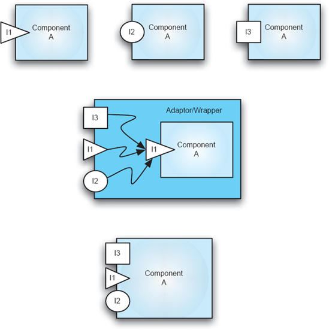
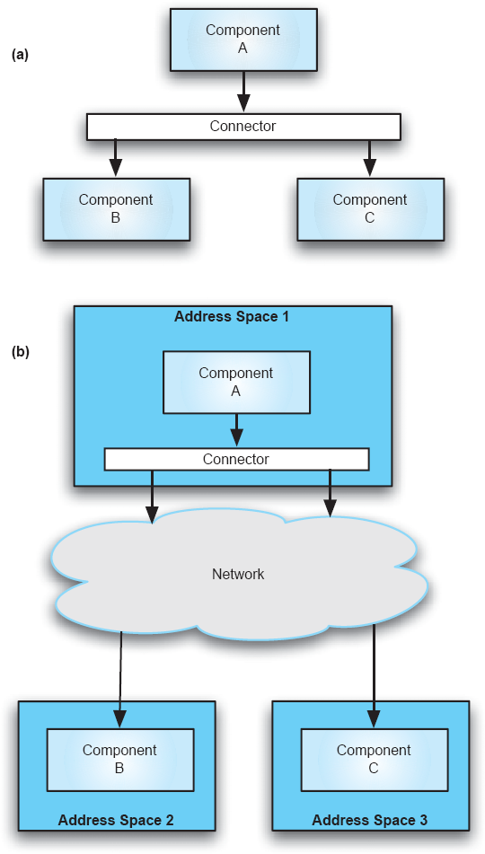
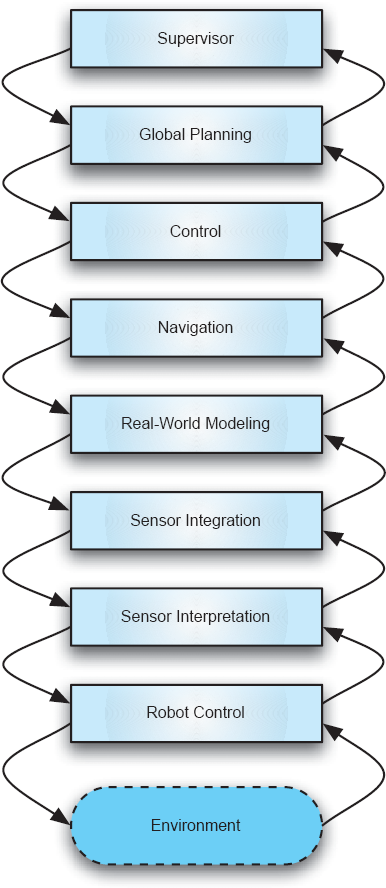
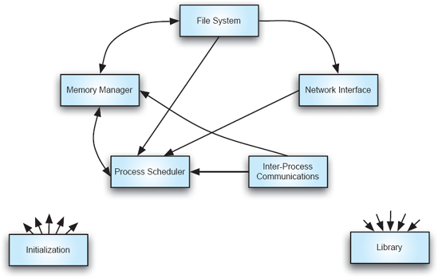
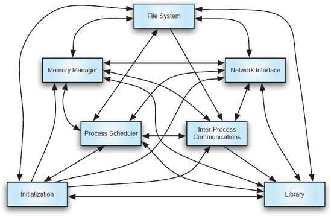
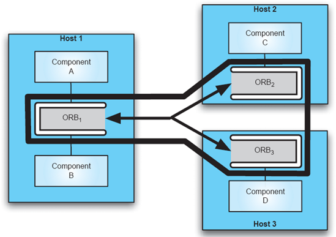

Capítulo 12. Projetando para Propriedades Não Funcionais
Engenhariar sistemas de software para que atendam a todos os seus inúmeros requisitos funcionais é difícil. Como vimos até agora, arquiteturas de software podem ajudar nessa tarefa por meio de composições eficazes de componentes e conectores bem definidos, que foram comprovadamente que cumprem as restrições estruturais, comportamentais e de interação necessárias. Embora satisfazer requisitos funcionais seja essencial, infelizmente não é suficiente. Desenvolvedores de software também devem prever propriedades não funcionais (NFPs) dos sistemas de software.
Definição. Uma propriedade não funcional (NFP) de um
sistema de software é uma restrição na forma como o sistema implementa e
entrega sua funcionalidade.
NFPs importantes dos sistemas de software incluem segurança, confiabilidade, disponibilidade, eficiência, escalabilidade e tolerância a falhas. Por exemplo, no caso do sistema Lunar Lander discutido ao longo deste livro, a eficiência da NFP pode ser caracterizada como a restrição de que o sistema deve responder a comandos de navegação dentro de um período de tempo específico e muito curto; a NFP de confiabilidade pode ser caracterizada como a restrição de que o sistema não pode estar em um estado de falha especificado por mais tempo que um intervalo de tempo específico.
A metodologia da engenharia de software enfatiza fazer as coisas corretas desde o início do processo de desenvolvimento de software, a fim de reduzir os custos de desenvolvimento e manutenção. Em particular, o surgimento do estudo da arquitetura de software marcou uma tendência importante no design de sistemas de software — uma tendência que, em princípio, permite que projetistas e desenvolvedores codifiquem NFPs como disponibilidade, segurança e tolerância a falhas desde cedo nos modelos arquitetônicos e mantenham sua rastreabilidade entre os artefatos do sistema e ao longo de toda a sua vida útil.
No entanto, ainda existem muitos domínios nos quais certos NFPs críticos não foram explicitamente identificados ou tratados no início do desenvolvimento. Isso é mais frequentemente evidenciado por experiências com sistemas baseados na Web e sistemas operacionais desktop. Pelo menos em parte, os desenvolvedores desses sistemas têm lidado com questões como segurança e confiabilidade como uma reflexão secundária. Por exemplo, muitos patches de segurança para o Microsoft Windows aparecem somente após uma falha de segurança ser exposta por terceiros. Além disso, esses sistemas existentes frequentemente não fornecem uma descrição explícita e ativa da arquitetura do sistema para ser usada como base para adicionar capacidades em apoio à sua confiabilidade. Mesmo que o fizessem, no entanto, nem sempre está claro como esses modelos arquitetônicos seriam usados. A literatura existente é quase completamente desprovida da relação entre elementos-chave arquitetônicos (componentes de software, conectores e configurações) com a confiabilidade de um sistema.
Uma dificuldade adicional é que muitos NFPs tendem a ser qualitativos em vez de quantitativos e frequentemente multidimensionais. Assim, é fundamentalmente difícil medir uma NFP com precisão e provar ou refutar até que ponto ela foi abordada em um determinado sistema. Uma dessas propriedades é, de fato, a confiabilidade. A confiabilidade tornou-se um PAPs de importância máxima em sistemas modernos distribuídos e descentralizados. Em um cenário idealizado, um sistema confiável é aquele no qual os usuários podem confiar completamente. Claramente, essa definição é inerentemente qualitativa e pode se prestar a interpretações subjetivas. A confiabilidade pode ser descrita com mais precisão em termos de suas diferentes dimensões: um sistema confiável deve ser seguro, confiável, disponível e robusto, e ao mesmo tempo deve ser capaz de lidar com falhas e manipulações maliciosas, como ataques de negação de serviço. No entanto, mesmo que houvesse medidas bem definidas para cada uma das dimensões, quantificar a confiabilidade ainda representaria um desafio. Por exemplo, pode ser difícil decidir, em um caso geral, qual sistema é mais confiável: um que seja altamente confiável, mas não tão seguro, ou um que seja altamente seguro, mas menos confiável.
Outra fonte de pressão sobre arquitetos de software para garantir NFPs tem surgido de questões não técnicas. Tradicionalmente, NFPs como segurança ou confiabilidade ficaram em segundo plano diante das atrações mais lucrativas do time-to-market, assim como das preocupações urgentes dos requisitos funcionais. Nesses cenários, a segurança foi forçada a um sistema de software, às vezes como um pensamento tardio, enquanto a confiabilidade é abordada por soluções de implementação frequentemente problemáticas. No caso da segurança, essas práticas também são complicadas pelo fato de que a segurança é difícil de implementar, de modo que indivíduos maliciosos quase sempre tiveram vantagem sobre os profissionais de segurança de software.
Embora o quadro apresentado possa parecer sombrio, arquiteturas de software podem melhorar significativamente as perspectivas de alcançar as metas de NFP. Do ponto de vista do design arquitetônico, adotar boas práticas de design pode ajudar na realização dessas propriedades, assim como práticas ruins podem prejudicar um sistema. Neste capítulo, fornecemos um conjunto de diretrizes de design que um arquiteto de software pode seguir para buscar vários NFPs comuns:
As diretrizes são apenas isso: diretrizes. Elas não são regras infalíveis que podem ser aplicadas sem pensar e, ainda assim, produzir bons resultados. Serão discutidas várias ressalvas e exceções. O trabalho do arquiteto é refletir sobre as múltiplas questões e determinar uma estratégia adequada a ser seguida.
Para cada uma das NFPs acima, forneceremos uma definição da NFP, discutiremos seu impacto na arquitetura de um sistema de software e, inversamente, discutiremos o papel dos diferentes elementos arquitetônicos — que incorporam as decisões de design arquitetônico — bem como os estilos arquitetônicos — as diretrizes para chegar a essas decisões de design e as restrições para essas decisões — na satisfação da NFP. Consideraremos tanto as características que tornam uma arquitetura mais propensa a exibir uma determinada propriedade quanto as características que podem dificultar o suporte da arquitetura a uma NFP. Quando apropriado, ilustraremos a discussão com exemplos concretos de arquiteturas e estilos arquitetônicos já existentes.
Note que a lista acima omite segurança, um NFP de grande e crescente importância. Por sua importância e significativas implicações arquitetônicas, todos osCapítulo 13é dedicado a esse tema.
Resumo deCapítulo 12
Propriedades Não Funcionais e Qualidade de Serviço
Um termo que entrou na literatura de engenharia de software relativamente recentemente é qualidade de serviço (QoS). Esse termo normalmente está associado a domínios de redes e sistemas distribuídos, e tem sido usado de forma um tanto imprecisa dentro da engenharia de software. Por exemplo, é frequentemente, mas incorretamente, equiparado a NFPs. Embora não foquemos especificamente em QoS neste livro, o termo merece uma breve discussão para que o leitor possa relacioná-lo adequadamente aos NFPs.
O QoS de um sistema pode ser pensado informalmente como o grau em que o sistema entrega seus serviços para satisfazer as expectativas dos usuários — os usuários podem ser humanos ou outro software. Portanto, QoS abrange tanto as propriedades funcionais quanto suas não funcionais de um sistema. Por exemplo, um sistema que implementa corretamente sua funcionalidade, mas é vulnerável a ataques maliciosos ou falha frequentemente, não forneceria NFPs como segurança, confiabilidade ou robustez; também não proporcionaria um bom QoS, pelos mesmos motivos. Por outro lado, um sistema "inquebrável" forneceria os NFPs acima (independentemente de suas propriedades funcionais), mas ainda pode sofrer com um QoS ruim, a menos que também ofereça a funcionalidade que seus usuários esperam.
EFICIÊNCIA
Definição. Eficiência é uma qualidade que reflete a
capacidade de um sistema de software de atender aos seus requisitos de
desempenho enquanto minimiza o uso dos recursos em seu ambiente computacional.
Em outras palavras, eficiência é uma medida da economia de uso de recursos de
um sistema.
Note que essa definição não aborda diretamente a questão da correção do sistema. Em vez disso, ele assume implicitamente que o sistema funcionará conforme necessário. Em outras palavras, um sistema não pode ser considerado eficiente se implementa a funcionalidade errada.
Um equívoco comum é que a arquitetura de software tem pouco a dizer sobre eficiência, já que arquitetura é uma entidade de tempo de projeto, enquanto eficiência é uma propriedade de tempo de execução. Isso está errado. Selecionar estilos ou padrões apropriados e instancia-los com componentes e conectores adequados terá um impacto direto e crítico no desempenho do sistema. Embora seja difícil enumerar todos os possíveis requisitos de desempenho e decisões arquitetônicas relacionadas, vamos delinear certas diretrizes gerais. O leitor deve ser capaz de usar essas diretrizes como ponto de partida para uma lista mais completa que será acumulada ao longo do tempo no arsenal pessoal do leitor.
Componentes de Software e Eficiência
Mantenha os Componentes Pequenos
Para eficiência, idealmente cada componente deve atender a uma única necessidade e servir a um único propósito no sistema. Isso ajuda a evitar a utilização de componentes quando a maioria dos serviços não será utilizada.
Essa diretriz pode impactar diretamente a reutilização de um componente: muitos componentes prontos para uso são muito grandes e, por design, incluem funcionalidades significativas que podem não ser necessárias em um sistema específico. Em outras palavras, construir componentes reutilizáveis pode ser um obstáculo para a construção de sistemas eficientes.
Como todas as diretrizes introduzidas neste capítulo, esta deve ser aplicada com a devida cautela. Claramente, existem componentes prontos a usar cuja área de memória e/ou desempenho em tempo de execução foram otimizados ao longo do tempo; Esses componentes provavelmente superarão componentes únicos construídos do zero. Outra exceção, bastante comum, é um subproduto direto do cache: armazenar dados localmente para uso posterior pode resultar em componentes com maior espaço de memória, mas também pode resultar em sistemas mais rápidos.
Mantenha as Interfaces de Componentes Simples e Compactas
Um componente de software é acessado apenas por meio de sua interface pública. A interface deve expor apenas aqueles serviços de componentes que devem ser visíveis do lado de fora. De forma semelhante, em geral, um componente nunca deve expor seu estado interno exceto por meio das operações destinadas a modificar esse estado.
Se a interface de um componente for incómoda, generalizada para um amplo conjunto de cenários de uso ou direcionada a uma classe ampla de clientes potenciais, a eficiência do componente pode ser comprometida. Por exemplo, o componente pode exigir diferentes tipos de adaptadores ou wrappers para especializá-lo em contextos específicos. Alternativamente, o componente pode converter internamente os parâmetros para ou a partir de uma forma de menor comum denominador.
Por outro lado, uma interface reduzida ao mínimo também pode impactar negativamente a eficiência de um componente. Um exemplo é um sistema baseado em pipes e filtros Unix, no qual os componentes (filtros) dependem de fluxos de dados ASCII não tipados para maximizar sua reutilização. No entanto, isso pode exigir a conversão constante desses fluxos em dados tipados para processamento mais avançado e para melhorar a confiabilidade do sistema, como será discutido adiante.
Note que insistir em interfaces compactas para fins de eficiência pode impactar negativamente outras propriedades desejáveis do componente, como sua reutilização, suporte à heterogeneidade e até escalabilidade. Isso será discutido no contexto da próxima diretriz e será revisitado mais adiante no capítulo.
Permitir múltiplas interfaces para a mesma funcionalidade
Componentes de software são tipicamente construídos para serem utilizáveis em múltiplos contextos de execução. Mesmo dentro de um único sistema, eles podem precisar fornecer serviços para múltiplos componentes clientes executando em diferentes plataformas, implementados em linguagens de programação distintas ou codificando seus dados usando padrões distintos. Eles também podem precisar aplicar, por exemplo, diferentes protocolos de interação, suporte a transações ou regras de persistência, conforme exigido pelos diferentes clientes. Nessas situações, os arquitetos podem optar por fornecer os serviços necessários por meio de múltiplos componentes que essencialmente replicam a funcionalidade uns dos outros. Claramente, isso prejudicaria a eficiência do sistema (a menos que o sistema seja distribuído de forma que uma cópia fisicamente mais próxima do componente em questão seja fornecida com a interface localmente necessária apropriada).
Outra opção é envolver o componente usando um conector adaptador que realiza todas as conversões de dados necessárias. Tal solução é mais flexível, pois o próprio componente permanece inalterado e mantém sua pegada de memória e propriedades de desempenho em tempo de execução. Ao mesmo tempo, o adaptador provavelmente vai gerar algum tempo de funcionamento adicional.
Como a abordagem baseada em adaptadores pode resultar em um componente de aplicação restrita, uma terceira opção é construir o componente de modo que ele exporte nativamente múltiplas interfaces para sua funcionalidade. Essa solução provavelmente será mais eficiente do que ambas as opções acima. Ao mesmo tempo, essa solução traz o risco de o componente ser inchado em situações onde apenas uma de suas interfaces possa ser usada. As três opções estão ilustradas na Figura 12-1.
Separar os Componentes de Processamento dos Dados
Modelar dados separadamente do processamento traz vários benefícios potenciais de eficiência. Primeiro, permite que a representação interna dos dados seja ajustada ou alterada, com base nos objetivos locais de projeto e sem afetar os componentes de processamento. De forma semelhante, isso permite otimizar algoritmos de processamento sem afetar a representação dos dados, que pode ser usada por múltiplos componentes do sistema. Separar o processamento dos dados também permite que os arquitetos assegurem, na arquitetura, que os dados apropriados estejam à disposição dos componentes de processamento apropriados, auxiliando assim os argumentos de correção do sistema.
Separar Dados dos Metadados
Em muitos sistemas distribuídos, heterogêneos e intensivos em dados, os dados do sistema são frequentemente separados dos metadados. Metadados são "os dados sobre os dados." Em outras palavras, nesses sistemas pode não estar claro a priori como os dados são estruturados e destinados a serem usados. Os dados podem, por exemplo, chegar em tempo de execução de formas imprevisíveis. Metadados podem ser usados como uma forma de descrever os dados para que os componentes de processamento possam descobrir, em tempo de execução, como processar os dados. Metadados são amplamente usados para descrever elementos de conteúdo da Web e o conteúdo de mensagens de e-mail.
Separar dados dos metadados reduz os dados, reduzindo a pegada de memória em tempo de execução do sistema; Toda vez que um pacote de dados é enviado de um componente de processamento para outro, pode não precisar ser acompanhado de informações de cabeçalho que descrevam completamente esses dados. Assim, se um componente já está cabeado para processar dados de um determinado tipo, ele pode fazê-lo diretamente. No entanto, manter os metadados e usá-los para interpretar cada pacote de dados, com o tempo, induz uma penalidade de desempenho em tempo de execução no caso geral.

Figura 12-1. Alternativas para permitir que um componente exporte múltiplas interfaces para a mesma funcionalidade. Múltiplas cópias do mesmo componente exportando diferentes interfaces (topo); um wrapper exportando as diferentes interfaces (meio); o próprio componente exportando as três interfaces (inferior).
Conectores de Software e Eficiência
Selecione cuidadosamente os conectores
Como argumentado emCapítulo 5, conectores de software são entidades de primeira classe em uma arquitetura de software. Eles encapsulam todas as facilidades de interação de um sistema. Especialmente em sistemas de software grandes, complexos e distribuídos, as interações entre os componentes do sistema tornam-se determinantes das principais propriedades do sistema, incluindo a eficiência. A seleção cuidadosa dos conectores é, portanto, crítica.
Embora muitos tipos diferentes de conectores possam fornecer o nível mínimo de serviço exigido por um determinado conjunto de componentes em um sistema, alguns conectores serão mais adequados que outros e, portanto, podem melhorar a eficiência do sistema. Por exemplo, o arquiteto pode selecionar um conector de transmissão de mensagens, como os conectores na arquitetura Lunar Lander estilo C2 deCapítulo 4, porque esse conector já foi usado em vários sistemas, pode acomodar um número variável de componentes interagindo (isto é, sua cardinalidade é N) e provou ser altamente confiável. No entanto, se o contexto particular em que o conector será usado envolver apenas um par de componentes interagindo, então um conector ponto a ponto mais especializado, embora menos flexível, provavelmente será uma escolha mais eficiente.
Da mesma forma, se o sistema em construção for crítico para segurança e tiver requisitos rígidos de computação em tempo real ou entrega de dados, um ponto de partida para o arquiteto provavelmente seriam conectores síncronos com semântica de entrega de dados exatamente uma vez. Por outro lado, se o sistema a ser construído for uma estação terrestre de satélite meteorológico, um conector de fluxo de dados com semântica de entrega de dados no máximo uma vez pode ser uma escolha melhor. É altamente improvável que a perda de pacotes de dados meteorológicos em um curto período de tempo — mesmo que alguns minutos — impacte severamente o sistema ou seus usuários.
Use Conectores de Broadcast com Cautela
Um sistema pode ser mais flexível se os conectores usados nele forem capazes de transmitir dados para múltiplos componentes interessados. Por exemplo, novos componentes podem se conectar a tal conector de forma fluida e começar a observar as informações retransmissas. No entanto, essa flexibilidade pode vir às custas de outras propriedades do sistema, como segurança e eficiência.
É possível que uma única interação envolva múltiplos componentes, e a tentação possa ser depender da transmissão. A desvantagem ocorre se alguns dos componentes que recebem a informação não realmente precisam dela. Nesse caso, o desempenho do sistema é impactado, não apenas porque os dados são roteados desnecessariamente pelo sistema, mas também porque os componentes destinatários precisam dedicar parte de seu tempo de processamento para estabelecer se os dados são relevantes para eles.
Uma alternativa aos conectores de broadcast são os conectores multicast, que mantêm um mapeamento explícito entre componentes interagindo. Outra possibilidade é depender de um mecanismo de publicação-assinatura para estabelecer tal mapeamento durante a execução.
Utilize interação assíncrona sempre que possível
Em um ambiente altamente distribuído e possivelmente descentralizado, pode ser difícil para múltiplos componentes sincronizarem seu processamento para que suas interações ocorram em momentos ideais para todos os componentes envolvidos. Se isso não acontecer e os conectores que atendem os componentes apenas suportarem interação síncrona, então, essencialmente, o componente mais lento prejudicará o desempenho de todo o sistema, podendo resultar em múltiplos componentes tendo que esperar ociosamente até que uma interação possa ser concluída.
Nessas situações, a interação assíncrona é preferível, onde um componente consegue iniciar a interação via conector e então continuar com seu processamento até um momento posterior, quando recebe uma resposta. Da mesma forma, cada componente invocado responderá às solicitações de serviço recebidas conforme sua disponibilidade e carga de processamento permitirem; Após atender à solicitação, o componente enviará sua resposta para o conector e poderá imediatamente continuar com seu processamento.
Note que isso nem sempre será possível (sistemas single-threaded sendo o exemplo mais simples), e que não vem sem custo de desempenho. Se a interação entre um conjunto de componentes for assíncrona, será responsabilidade do conector garantir que as solicitações e respostas de serviço estejam devidamente associadas entre si.[17], Isso significa que o conector terá que fazer processamento adicional para manter muitos desses mapeamentos e determinar a ordem das requisições e respostas, bem como seus destinos. Além disso, a natureza de um determinado componente, ou de uma determinada solicitação, pode ser tal que o componente precise suspender seu processamento e aguardar uma resposta, caso em que o benefício de empregar um conector assíncrono será perdido.
Use a Transparência de Localização com Discernimento
A transparência de localização, também chamada de transparência de distribuição, protege os componentes de um sistema distribuído dos detalhes de sua implantação. Em princípio, isso permite que os componentes sejam projetados como se todas as suas interações fossem locais, ou seja, como se estivessem co-localizados em um único host com todos os componentes com os quais precisam interagir. Isso, por sua vez, permite uma adaptação fácil do sistema, possibilitando a reimplantação de alguns componentes entre hosts sem afetar os componentes restantes; É tarefa dos conectores dos sistemas garantir essa transparência. Uma ilustração é apresentada na Figura 12-2.
Na prática, porém, a transparência total da localização é difícil de alcançar. Interações remotas, por exemplo, são muitas vezes mais lentas do que as locais. Por algumas medidas, podem ser mais lentos por um fator de quarenta ou mais. Assim, tanto os componentes interativos quanto seus usuários podem rapidamente perceber a diferença. Isso significa que qualquer sistema distribuído com requisitos específicos de desempenho e o objetivo de transparência de localização pode ter que assumir o pior cenário — que cada componente esteja localizado em um host separado. Uma alternativa preferida é distinguir claramente conectores remotos de locais. Isso pode impactar a adaptabilidade do sistema, mas garantir o desempenho adequado.
Configurações Arquitetônicas e Eficiência
Mantenha os componentes frequentemente interagindo
próximos
O número de indireções pelas quais dois ou mais componentes se comunicam prejudicará a eficiência dessa interação. Isso é especialmente verdadeiro para sistemas com requisitos de desempenho em tempo real. Estilos arquitetônicos ou configurações que colocam muitos pontos de indireção entre esses componentes não serão adequados. Por exemplo, se um componente A naturalmente se encaixa duas ou mais camadas acima do componente B em uma arquitetura em camadas, mas os dois componentes precisam interagir frequentemente em um curto período de tempo, uma arquitetura estritamente em camadas não é uma boa escolha para o sistema: toda interação precisará ser encaminhada pelas camadas intermediárias.
Um exemplo de arquitetura em camadas em que a distância entre camadas interagentes se mostra um problema é o sistema robótico móvel discutido por Mary Shaw e David Garlan (Shaw e Garlan 1996), representado na Figura 12-3. O componente de Controle Robótico observa o ambiente e invoca o componente de Interpretação do Sensor em resposta a eventos de interesse. Por sua vez, o componente de Interpretação do Sensor pode precisar invocar o componente (ou seja, a camada) acima dele, a Integração do Sensor, para uma interpretação mais significativa e não local dos eventos detectados. Da mesma forma, o componente de Integração de Sensores pode exigir a ajuda do componente acima dele, e assim por diante, até que finalmente o componente de nível mais alto, Supervisor, seja alcançado. Uma vez que um componente em uma determinada camada é capaz de atender à solicitação recebida, ele retorna os resultados para o componente imediatamente abaixo dele; essa sequência continua até que o componente de Controle Robótico receba as informações necessárias para responder ao evento detectado.

Figura 12-2. Transparência na distribuição. Visão conceitual da arquitetura (a) e vista de implantação da mesma arquitetura (b). Os componentes do sistema não conhecem o perfil de implantação. Os conectores tornam esse perfil transparente. Se os mesmos conectores forem usados em cenários locais e distribuídos, a eficiência do sistema provavelmente será comprometida.

Figura 12-3. Uma arquitetura em camadas para um sistema robótico móvel em que a estratificação rigorosa pode induzir penalidades de desempenho.
Nessa arquitetura, é possível que uma solicitação do Controle de Robôs seja propagada para até sete outros componentes e retornada por meio deles antes de ser atendida. Por exemplo, se uma dada classe de eventos do Controle do Robô se refere à Navegação do robô, esses eventos ainda são propagados, e as respostas a eles retornadas, por meio dos três componentes intermediários. Claramente, essa não é uma solução eficiente. Shaw e Garlan reconhecem isso e discutem várias arquiteturas alternativas para o sistema.
Uma forma comum de manter componentes frequentemente interagindo próximos é armazenar em cache, acumular ou pré-buscar os dados necessários para sua interação. Todas essas três técnicas tentam antecipar as informações remotas que um determinado componente precisará e entregar essas informações em um momento conveniente, ou seja, quando o impacto no desempenho geral do sistema será mínimo, antes que a informação seja realmente necessária. Essa é uma forma de imitar a transparência da localização. Cache, acumulação e pré-busca fazem parte das funções de um conector de software. Note que tais recursos avançados invariavelmente aumentam a complexidade do conector, o que é discutido mais adiante.
Selecione e posicione cuidadosamente os conectores na
arquitetura
Qualquer sistema grande tende a compreender componentes com requisitos de interação heterogêneos. Como discutido emCapítulo 5, é possível criar conectores grandes capazes de atender simultaneamente múltiplos componentes de maneiras diferentes. Múltiplos desses conectores poderiam então ser usados no sistema. No entanto, cada conector suportaria um superconjunto das capacidades de interação necessárias, o que significa que, em média, muitos dos recursos do conector permaneceriam sem uso, mas ainda assim consumiriam recursos. Além disso, será difícil otimizar os conectores maiores e de uso geral.
Por essa razão, pode ser preferível que um arquiteto escolha múltiplos conectores, cada um adaptado ao subconjunto específico de necessidades específicas de interação dos componentes, em vez de conectores menores, mas maiores, que podem atender mais componentes no sistema e suas múltiplas necessidades. Um exemplo óbvio é o conector de chamada de procedimento. As chamadas de procedimentos são simples e eficientes. Sozinhos, eles podem não conseguir fornecer facilidades de interação mais avançadas, como invocação assíncrona, mas conseguem satisfazer a maioria das necessidades dos sistemas atuais, mesmo em ambientes distribuídos. As facilidades de conexão de ordem superior podem, claro, ainda ser selecionadas e adicionadas ao sistema, mas somente se e quando forem necessárias.
Da mesma forma, se um determinado componente de software possui múltiplos requisitos de desempenho, várias opções estão à disposição do arquiteto. Se o componente exporta múltiplas interfaces, o arquiteto pode empregar múltiplos conectores para atender o componente, um por tipo de interface. Alternativamente, o arquiteto pode tentar separar o componente multifacetado em múltiplos componentes separados.
Considere o impacto da eficiência de estilos e padrões
arquitetônicos selecionados
Alguns estilos não combinam bem com certos tipos de problemas. Há muitos exemplos; Considere alguns abaixo.
Um argumento análogo vale para padrões arquitetônicos. Por exemplo, o padrão modelo-visualização-controlador pode funcionar bem em um ambiente centralizado, mas pode não ser adequado para ambientes altamente distribuídos e descentralizados devido à frequente e estreita interação entre os componentes.
Também deve ser observado que, embora a adaptabilidade em certos casos — como apoiar a transparência de localização — possa prejudicar a eficiência do sistema, em outros casos a adaptação do sistema pode ser usada como ferramenta para atender aos requisitos de desempenho. Por exemplo, um estilo que suporta reimplantação em uma arquitetura distribuída pode ser capaz de suportar certos requisitos de desempenho de forma mais eficaz.
COMPLEXIDADE
A complexidade do software pode ser pensada sob diferentes perspectivas e, portanto, definida de maneiras distintas. Por exemplo, a definição de complexidade do IEEE (IEEE 1991) é a seguinte.
Definição. Complexidade é o grau em que um sistema
de software ou um de seus componentes possui um design ou implementação difícil
de entender e verificar.
Essa definição implica que a complexidade é parcial às perspectivas específicas de compreensão e verificação de sistemas. A definição não especifica como a complexidade pode se manifestar em um sistema de software ou como impactaria outros objetivos, como satisfazer requisitos de desempenho. Talvez o pior de tudo seja que a determinação do grau de complexidade de um sistema depende do indivíduo específico que é questionado sobre o quão "difícil de entender" o sistema é.
Para entender o impacto da arquitetura de software na complexidade, é preciso levar em conta as características do próprio sistema. Uma definição diferente e um pouco mais útil segue.
Definição. Complexidade é uma propriedade de um
sistema de software que é proporcional ao tamanho do sistema, ao número de seus
elementos constituintes, ao tamanho e estrutura interna de cada elemento, e ao
número e natureza das interdependências desses elementos.
Para tornar essa definição mais precisa, também precisaríamos definir "tamanho", "estrutura interna" e "natureza das interdependências". Ainda assim, o leitor deve ter uma compreensão intuitiva desses termos através de aulas introdutórias de programação. Por exemplo, o tamanho de um sistema de software pode ser medido em termos de linhas de código-fonte, número de módulos ou número de pacotes. O leitor também deve estar familiarizado com a estrutura interna de um elemento a partir das discussões sobre modelos arquitetônicos e com diferentes tipos de interdependências de módulos a partir da discussão sobre conectores de software emCapítulo 5.
Existem várias observações que emergem da segunda definição de complexidade e que também concordam com nossas intuições gerais sobre sistemas de software. Essas observações nos ajudam a discutir as implicações arquitetônicas da complexidade e formular algumas diretrizes para ajudar a reduzir ou mitigar sua presença.
Componentes de Software e Complexidade
Separar as Preocupações em Diferentes Componentes
A sabedoria convencional da engenharia de software sugere que cada um dos vários tipos de tarefas realizadas por um sistema deve ser suportado por um componente ou conjunto diferente de componentes. Essa diretriz pode ser óbvia para qualquer engenheiro de software, pois decorre da aplicação dos princípios fundamentais do desenvolvimento de software: abstração, modularidade, separação de preocupações e isolamento da mudança. Ao mesmo tempo, essa diretriz precisa ser esclarecida em relação a uma observação relacionada, talvez óbvia: todas as outras coisas sendo iguais, um sistema de software com um número maior de componentes é mais complexo do que um sistema com um número menor de componentes.
À primeira vista, isso sugeriria que os arquitetos deveriam se esforçar para minimizar o número de componentes em seu sistema. Em outras palavras, os arquitetos devem tentar colocar múltiplas preocupações em um único componente para reduzir o número de componentes. Na verdade, a diretriz (que diferentes preocupações do sistema devem ser separadas em componentes diferentes) e a observação (que um número maior de componentes resulta em complexidade adicional) não são inconsistentes. Em uma arquitetura, o número de componentes pode não ser tão relevante para a complexidade do sistema quanto o número de tipos de componentes. Componentes do mesmo tipo podem ser mais fáceis de entender e analisar, podem ser mais naturalmente componíveis e podem ajudar a abstrair os detalhes de suas instâncias. Por outro lado, um sistema com relativamente menos instâncias de componentes, mas que são de muitos tipos diferentes, pode, de fato, aumentar a complexidade geral.
A noção de tipos usados aqui é mais ampla do que a normalmente empregada nas áreas de linguagens de programação ou métodos formais. Para fins desta discussão, um tipo de componente pode se referir, por exemplo, a uma estrutura, comportamento, domínio de aplicação, organização que desenvolveu os componentes ou API padronizada semelhante. Em outras palavras, um tipo nesse contexto refere-se a qualquer conjunto de características componentes que possam, em última análise, reduzir o esforço necessário para a construção, composição, integração, verificação ou evolução do sistema abrangente. Por exemplo, um sistema desenvolvido inteiramente em CORBA pode ser mais fácil de entender do que o mesmo sistema desenvolvido usando um conjunto de tecnologias heterogêneas. A razão é que ambos os sistemas podem ser compostos pelo mesmo número de instâncias de elementos, mas o sistema CORBA é composto por um número menor de tipos de elementos.
Também é importante notar que reduzir o número de componentes em um sistema não garante menor complexidade se isso resultar em aumentar a complexidade de cada componente individual. Em outras palavras, um sistema com componentes constituintes maiores é tipicamente mais complexo do que um sistema com componentes menores. Dito de outra forma, um sistema com componentes mais complexos é ele mesmo mais complexo. Novamente, essa é uma medida relativa e dependerá do número de componentes em questão. Por exemplo, um pequeno número de componentes complexos, pertencentes a um pequeno número de tipos de componentes, não necessariamente resulta em um sistema complexo.
Uma observação final, aplicável tanto a componentes quanto a conectores, é que, do ponto de vista arquitetônico, componentes individuais são frequentemente "caixas-pretas". Desde que possam ser tratados como tais — ou seja, desde que os engenheiros possam evitar examinar os detalhes dos componentes ao estabelecer a propriedade de interesse de um sistema — sua complexidade interna não importa. Em outras palavras, esse é exatamente o tipo de complexidade que é abstraído por um bom design arquitetônico.
Claro, é uma questão justa se perguntar quão realista é que os engenheiros não precisem considerar os detalhes internos de um componente. De fato, embora o desenvolvimento de software baseado em componentes tenha ajudado engenheiros de maneiras significativas, a experiência até agora sugere que os problemas realmente insidiosos envolvem a interação de múltiplos componentes e frequentemente exigem a consideração tanto de suas interações quanto de sua estrutura e comportamento internos. Por isso, uma abordagem baseada em arquitetura para o desenvolvimento de software permite a inclusão de muitas preocupações, incluindo preocupações intracomponentes, no conjunto das principais decisões de design de um sistema.
Mantenha apenas a funcionalidade dentro dos componentes —
não a interação
Embora os componentes em um sistema de software contenham funcionalidades e dados específicos da aplicação, eles também precisam interagir com outras partes do sistema, muitas vezes de maneiras intrincadas e heterogêneas. Na maioria dos sistemas comerciais de software, um componente está sobrecarregado com pelo menos algumas de suas próprias responsabilidades de interação. Os exemplos mais comuns, claro, são o uso de chamadas de procedimentos e acesso à memória compartilhada. Os componentes normalmente suportam um desses dois mecanismos para integrar e interagir com componentes externos.
Embora possam existir razões legítimas para acoplar computação ou dados com interação (por exemplo, para melhorar a eficiência do componente em um determinado sistema), isso viola, em última análise, o princípio básico da engenharia de software de separação de preocupações e resulta em componentes mais complexos. Além disso, a decisão de colocar as facilidades de interação dentro de um componente pode prejudicar a reutilizabilidade do componente: as facilidades de interação serão integradas ao componente, mas podem não se adequar para sistemas futuros. Por exemplo, se um componente incorporar elementos que lhe permitam se comunicar síncronamente por meio de chamadas remotas de procedimentos, esse componente será destinado a ser usado em determinados ambientes distribuídos. Por outro lado, tal projeto acabará prejudicando a eficiência do componente, assim como a de seus sistemas envolventes, se o componente precisar ser usado em um contexto alternativo em que suas interações precisam ser assíncronas ou locais, ou ambos. Nesses casos, conectores adaptadores precisarão ser usados para integrar o componente ao restante do sistema.
Colocar instalações de interação dentro de um componente também viola o princípio da separação de preocupações do ponto de vista do conector: as facilidades de interação alojadas dentro do componente precisarão ser isoladas para torná-las reutilizáveis, otimizá-las ou melhorar sua confiabilidade ao longo do tempo. Isso será discutido mais adiante.
Mantenha os Componentes Coesos
Essa diretriz é semelhante à diretriz "Mantenha os componentes pequenos" deSeção 12.1.1; Consulte essa seção para a essência do argumento. Ao mesmo tempo, uma realidade do desenvolvimento de software não pode ser evitada: independentemente de quão fundamentadas ou inteligentes sejam as decisões arquitetônicas de design, problemas complexos frequentemente exigem soluções complexas. A arquitetura de software pode desempenhar um papel no controle dessa complexidade, mas a arquitetura não pode eliminar essa complexidade. Portanto, um componente pode, de fato, precisar ser complexo se a funcionalidade que ele oferece for complexa.
No entanto, essa complexidade será mais fácil de enfrentar se o componente tiver um foco claro, ou seja, se atender a uma necessidade específica e bem definida no sistema e não incorporar soluções para múltiplos requisitos do sistema distintos. Um exemplo de componentes que não são coesos foi discutido na diretriz anterior: Acoplar funcionalidade com interação dentro de um componente acabará aumentando a complexidade do componente e pode resultar em várias outras características indesejáveis. Outra classe potencial de componentes será discutida a seguir.
Esteja atento ao impacto dos componentes prontos para uso
na complexidade
Em geral, a reutilização pronta para o mercado traz muitos benefícios bem documentados. Entre eles está o potencial de reduzir o esforço de desenvolvimento, tempo e custo, além de melhorar a confiabilidade do sistema. Ao mesmo tempo, componentes prontos para uso costumam ser sistemas muito grandes e complexos por si só. Eles podem exigir muito estudo cuidadoso para compreendê-los, além de técnicas complexas para integração com outros componentes.
Portanto, componentes prontos a usar podem impactar a complexidade de um sistema de duas maneiras: (1) como subproduto de sua própria complexidade interna, e (2) exigindo que conectores complexos sejam usados no sistema. A primeira fonte de complexidade pode ser evitada desde que o componente possa ser tratado como uma caixa preta. No entanto, assim que o engenheiro precisa "espiar dentro" do componente, a complexidade do sistema em questão pode aumentar significativamente.
A segunda fonte de complexidade surge de um equívoco comum no desenvolvimento baseado em reutilização pronta para uso. Esse equívoco é que APIs limpas e bem documentadas necessariamente simplificarão a integração de um componente em um novo sistema. Embora tais APIs sejam certamente necessárias para usar o componente de forma eficaz, elas ainda podem mascarar muitas idiossincrasias na forma como o componente realmente deve ser usado. Por exemplo.
Os conectores necessários para integrar componentes prontos para uso precisam levar em conta esses detalhes. Portanto, eles serão uma fonte muito real de complexidade, e uma das quais um arquiteto de software deve estar muito ciente.
Isolar os Componentes de Processamento contra Mudanças no
Formato dos Dados
Componentes de processamento que precisam de acesso aos dados do sistema provavelmente dependerão de esses dados serem apresentados em um formato específico. Caso o formato dos dados mude — o que é possível, até provável, em sistemas distribuídos, descentralizados e de longa duração — os próprios componentes podem precisar mudar. De fato, é concebível que uma simples mudança nos dados possa afetar grande parte de um sistema. Além disso, o impacto das mudanças nos dados pode não ser facilmente previsto, pois muitas notações de modelagem de arquitetura não levam em conta as dependências de acesso aos dados.
Para evitar tais situações indesejáveis, os arquitetos devem empregar técnicas para controlar a complexidade do processamento em dados e das dependências entre dados. Uma dessas soluções é usar componentes dedicados em nível meta para lidar com a descoberta de recursos de dados e o rastreamento de localização. Outra solução é utilizar conectores adaptadores explícitos que permitam que os componentes de processamento dependam da mesma "interface" de dados. Por fim, como discutido no caso da eficiência acima, os dados devem ser separados dos metadados, permitindo que os componentes interpretem dinamicamente os dados acessados.
Conectores de Software e Complexidade
Trate os conectores explicitamente
O impacto da funcionalidade, dados e interação de acoplamento na complexidade de um sistema foi discutido acima, nas diretrizes para o projeto, construção e seleção de componentes. Uma das contribuições principais do desenvolvimento de software, sob uma perspectiva arquitetônica explícita, é que a funcionalidade e os dados específicos da aplicação devem ser separados da interação independente da aplicação. Essa interação deve estar alojada em conectores de software explícitos.Capítulo 5discute os muitos argumentos a favor do tratamento explicitamente dos conectores.
Mantenha apenas as facilidades de interação dentro dos
conectores
Os conectores são responsáveis pelas facilidades de interação independentes da aplicação em um determinado sistema de software. A tarefa de um conector é apoiar as necessidades de comunicação e coordenação de dois ou mais componentes, além de fornecer as capacidades necessárias de conversão e facilitação para melhorar essa comunicação e coordenação.
No entanto, assim como pode haver a tentação de colocar recursos de comunicação avançadas dentro dos componentes, pode ser igualmente tentador colocar funcionalidades ou dados específicos de um aplicativo dentro de um conector. Raramente há bons motivos para fazer isso — sempre será possível adicionar um novo componente para abrigar essa funcionalidade — e há muitos motivos para não fazer isso. Portanto, como diretriz geral, deve sempre ser evitado tornar um conector responsável por fornecer funcionalidades ou dados específicos da aplicação.
Preocupações de Interação Separada em Conectores
Diferentes
Preocupações de interação em um dado sistema podem ser simplesmente os papéis gerais de conectores discutidos emCapítulo 5, como separar comunicação de facilitação. Essas preocupações também podem ser mais específicas para a aplicação, como desacoplar a troca de dados entre dois componentes distribuídos específicos da compressão desses dados para permitir uma transmissão mais eficiente pela rede.
O argumento básico subjacente a essa diretriz é análogo ao aplicado a componentes de software emSeção 12.2.1. Em princípio, cada conector deve ter uma responsabilidade única, específica e bem definida. Isso permite que os conectores sejam atualizados, mesmo durante a execução do sistema. Também permite que o arquiteto avalie claramente os componentes que interagem por esses conectores, bem como o impacto de quaisquer modificações desses componentes. Qualquer problema com o sistema será mais fácil de isolar e resolver também.
Restringa as Interações
Facilitadas por Cada Conector
Em sistemas de software distribuído, a interação frequentemente supera a computação como fator dominante para determinar as principais características de um determinado sistema. Por exemplo, o estudo do consumo de energia de baterias em alguns sistemas distribuídos mostrou que os custos de comunicação normalmente superam de tamanho inferior aos custos computacionais; Por causa disso, os custos computacionais de energia de um sistema são, em alguns casos, considerados pouco mais que ruído e, portanto, são ignorados na avaliação geral do custo energético do sistema.
Argumentos semelhantes podem ser feitos sobre outras propriedades, incluindo eficiência, adaptabilidade e, em particular, complexidade. Se um conector envolver desnecessariamente componentes em interações nas quais não têm interesse (por exemplo, enviando dados a eles), a complexidade geral do sistema aumentará. No melhor cenário, a tentativa de interação será ignorada. Em certas situações, os componentes podem ser forçados a fazer um esforço explícito para ignorar as investidas indesejadas de interação do conector, ou seja, algum processamento será gasto desnecessariamente, além do tráfego de dados desnecessário. No pior caso, os componentes podem se envolver acidentalmente na interação e afetar erroneamente a funcionalidade e o estado do sistema. Nessas situações, descobrir quais caminhos de interação — intencionais ou acidentais — causaram o defeito do sistema pode ser muito difícil.
A regra mais simples é usar interação direta ponto a ponto sempre que possível. Mecanismos de interação indireta, como baseado em eventos ou publicação-assinatura, são meios muito elegantes para garantir muitas propriedades em sistemas distribuídos, como adaptabilidade, heterogeneidade ou descentralização. No entanto, as interações específicas que ocorrem no sistema e que podem estar causando defeitos no tempo de execução podem ser difíceis de identificar quando tais mecanismos são utilizados. Da mesma forma, a interação síncrona se presta melhor do que a interação assíncrona para determinar com precisão os caminhos de interação entre os componentes do sistema.
Em outras palavras, embora certos estilos de interação e composição do sistema tenham se tornado prevalentes em sistemas de software grandes, distribuídos e descentralizados, e sejam facilitadores diretos de várias propriedades desejáveis do sistema, eles tendem a impactar negativamente a complexidade do sistema. É uma troca de engenharia.
Esteja atento ao impacto dos conectores prontos para uso
na complexidade
Conectores fornecem serviços independentes da aplicação, então parecem ser um alvo natural para tentativas de reutilização. No entanto, existem várias armadilhas que um engenheiro deve evitar. A maioria deles é semelhante às armadilhas discutidas na diretriz análoga aplicada aos componentes emSeção 12.2.1. Um exemplo simples é reutilizar um conector que possui muito mais recursos e capacidades do que uma situação específica exige.
Uma observação adicional, específica para conectores prontos, é que normalmente será mais difícil garantir os caminhos de comunicação adequados no sistema em questão, já que o engenheiro provavelmente terá um grau de controle menor em comparação com conectores personalizados.
Configurações arquitetônicas e complexidade
Elimine Dependências Desnecessárias
Sistemas de software grandes são tipicamente mais complexos do que os pequenos. Isso significa, por extensão, que sistemas com arquiteturas de software maiores também tendem a ser mais complexos. O tamanho de uma arquitetura, nesse sentido, pode ser medido em termos do tamanho do modelo arquitetônico, conforme indicado, por exemplo, pelo número de afirmações ou elementos de diagrama na notação de modelagem. Também pode ser medida em termos do número de componentes constituintes, conectores e, talvez mais significativamente, caminhos de interação na configuração arquitetônica.

Figura 12-4. A arquitetura do sistema operacional Linux conforme documentado. Adaptado de Bowman et al. (Bowman, Holt, and Brewster 1999) © 1999 ACM, Inc. Reimpresso com permissão.
Na maioria das vezes, um sistema com mais interdependências entre seus módulos é mais complexo do que um sistema com menos interdependências. As razões são pelo menos duas. Primeiro, há um número maior de caminhos de interação possíveis em tal sistema. Segundo, é mais difícil controlar o comportamento e prever as propriedades de tal sistema, justamente por causa dos caminhos de interação adicionais.
Considere, por exemplo, a arquitetura do sistema operacional Linux, estudada por Ivan Bowman e colegas e mostrada nas Figuras 12-4 e 12-5. A Figura 12-4 mostra a arquitetura "conforme documentada" do Linux, que os autores extraíram da literatura disponível sobre Linux. A Figura 12-5 mostra a arquitetura "como implementada", que os autores extraíram do código-fonte do Linux. Para fins desta discussão, trataremos cada subsistema identificado como um único componente na arquitetura.
Os dois diagramas são bastante diferentes: a arquitetura documentada é muito limpa, com um pequeno número de dependências unidirecionais. Por outro lado, a arquitetura conforme implementada representada na Figura 12-5 é um grafo totalmente conexo no qual quase todas as dependências são bidirecionais. Qualquer modificação nessa arquitetura será significativamente mais difícil de ser efetuada corretamente devido a essa complexidade adicional.
Por exemplo, o componente de Interface de Rede na Figura 12-4 depende apenas do Agendador de Processos, e é utilizado pelo Sistema de Arquivos. Por outro lado, na Figura 12-5 o mesmo componente depende e é usado por quase todos os outros componentes do sistema; a única exceção é o módulo de Inicialização, com o qual a Interface de Rede tem uma dependência unidirecional.

Figura 12-5. A arquitetura do sistema operacional Linux conforme implementada. Adaptado de Bowman et al. (Bowman, Holt, and Brewster 1999) © 1999 ACM, Inc. Reimpresso com permissão.
As principais perguntas nessa situação são: por que existem tantas interdependências de componentes, e se todas são necessárias? Mesmo que sejam realmente necessários, uma configuração arquitetônica revelada por meio de um grafo totalmente conectado de componentes e conectores provavelmente indica um projeto ruim.
Nesse caso, o arquiteto precisa reconsiderar cuidadosamente suas decisões de design. Ele também pode precisar reconsiderar os estilos e padrões arquitetônicos selecionados. Embora um estilo ou padrão não consiga eliminar a complexidade inerente a um sistema, um determinado estilo ou padrão será apropriado para algumas classes de problemas, mas pode ser inadequado para outras.
Gerencie todas as dependências explicitamente
Para ilustração, continuaremos nos referindo ao exemplo das Figuras 12-4 e 12-5. No entanto, o leitor deve notar que este exemplo está longe de ser atípico. Casos em que uma arquitetura se degrada muito ao longo do tempo são frequentes. Os desenvolvedores do Linux claramente escolheram destacar, e provavelmente confiar, na arquitetura documentada (Figura 12-4) como a correta. Essa decisão pode ter sido acidental, ou seja, produto de uma longa sucessão de pequenas violações não documentadas da arquitetura que a maioria dos desenvolvedores Linux desconhecia. Por outro lado, a decisão também pode ter sido deliberada, pois o número de dependências que um engenheiro teria que considerar — caso um novo componente precisasse ser adicionado, um existente modificado ou um defeito no sistema corrigido — era muito menor e a arquitetura mais fácil de justificar do que seria o caso da arquitetura na Figura 12-5.
Ao mesmo tempo, a arquitetura documentada claramente omitiu a maioria das dependências. Só porque esses foram escondidos dos engenheiros, suas tarefas de modificação não seriam facilitadas. Muito pelo contrário, engenheiros podem ter tido que descobrir essas dependências ausentes por conta própria, depois de descobrirem que adaptações de sistemas que deveriam ter se comportado de determinada forma na verdade não funcionavam corretamente. Nessas situações, os engenheiros seriam forçados a estudar o código-fonte, após perceberem que a documentação não só é incompleta, como também enganosa.
É por causa dessas armadilhas que a verdadeira complexidade de um sistema não deve, e não pode, ser ocultada, e que todas as dependências devem ser gerenciadas explicitamente na arquitetura.
Use (De)composição hierárquica
A decomposição hierárquica da arquitetura de um sistema de software e a composição hierárquica dos componentes do sistema são ferramentas importantes para gerenciar a complexidade de um dado sistema. Os componentes de uma dada unidade conceitual são agrupados em um componente maior e mais complexo; esse componente também pode ser agrupado com outros componentes semelhantes em componentes ainda maiores. Por meio do uso de interfaces apropriadas, a complexidade subjacente é mascarada, permitindo que a arquitetura do sistema em seu nível mais alto seja mais facilmente compreensível.
Por exemplo, a arquitetura Linux é decomposta em sete componentes principais (ou seja, subsistemas Linux) e suas dependências. Cada um desses componentes exporta uma interface para o restante do sistema e, assim, abstrai a arquitetura interna do componente. Isso também ocorre frequentemente com componentes prontos para uso discutidos acima, que podem ser sistemas por si só. Em princípio, um sistema (des)composto hierárquicamente permite ao arquiteto isolar as partes de um sistema que são relevantes para uma adaptação necessária.
Cuidado com o jogo dos números
Há um perigo real em reduzir diretrizes e observações como as encontradas neste capítulo a uma métrica que depois é aplicada cegamente. Espera-se que arquitetos (e seus gestores) usem o bom senso.
Por exemplo, para reduzir artificialmente a complexidade de um sistema, uma "solução" simples pode ser criar um sistema monolítico, onde todos os componentes e conectores são agrupados em um grande módulo. Isso claramente não seria uma boa ideia, e não seria a implicação pretendida dessas diretrizes.
ESCALABILIDADE E HETEROGENEIDADE
Definição. Escalabilidade é a capacidade de um
sistema de software ser adaptado para atender a novos requisitos de tamanho e
escopo.
Embora a escalabilidade de um sistema se refira à sua capacidade de ser crescida ou reduzida para atender a mudanças no tamanho do problema, tradicionalmente a dificuldade enfrentada pelos engenheiros de software tem sido suportar sistemas maiores e, portanto, mais complexos. Portanto, restringiremos nossa discussão à ampliação dos sistemas de software.
A arquitetura de software desempenha um papel fundamental no suporte à escalabilidade. Existem várias dimensões na escalabilidade, que discutiremos junto com o papel da arquitetura de software em suportar cada uma. Deve-se notar que a escalabilidade pode ser alcançada em um caso arbitrário, mas a um custo potencialmente exorbitante. O objetivo desta seção é fornecer diretrizes que permitam a arquitetos e engenheiros de software melhorar a escalabilidade de um sistema sem aumentar de forma proibitiva sua complexidade e deteriorar seu desempenho. Em outras palavras, pode-se dizer que um sistema de software escala bem se sua taxa de crescimento não for maior que a taxa correspondente de aumento da complexidade.
Outros dois NFPs lidam com aspectos do sistema relacionados à escalabilidade: heterogeneidade e portabilidade.
Definição. Heterogeneidade é a qualidade de um
sistema de software composto por múltiplos constituintes díspares ou que
funciona em múltiplos ambientes de computação distintos.
Frequentemente queremos falar de um sistema que facilmente acomoda elementos heterogêneos, ou seja, acomoda a incorporação de componentes e conectores díspares em sua estrutura, portanto também usaremos heterogeneidade para nos referir a uma habilidade.
Definição. Heterogeneidade é a capacidade de um
sistema de software de consistir em múltiplos constituintes díspares ou
funcionar em múltiplos ambientes computacionais distintos.
Definição. Portabilidade é a capacidade de um
sistema de software de executar em múltiplas plataformas (hardware ou software)
com modificações mínimas e sem degradação significativa das características
funcionais ou não funcionais.
A portabilidade pode, portanto, ser vista como uma especialização de heterogeneidade.
Assim como escalabilidade, heterogeneidade e portabilidade são propriedades do sistema que refletem a capacidade do sistema de acomodar mudanças e diferenças. Eles se referem ao número crescente de tipos de ambientes de execução, tanto no caso de portabilidade quanto de heterogeneidade, assim como tipos de elementos de software e usuários, no caso da heterogeneidade.
A heterogeneidade pode ser vista sob duas perspectivas.
Na discussão abaixo, para facilitar a exposição, vamos focar na escalabilidade como a propriedade geral.
Componentes de Software e Escalabilidade
A arquitetura de um sistema de software pode precisar suportar a adição de novos componentes. Os componentes podem ser adicionados conforme novos requisitos surgem durante a vida útil do sistema. Alternativamente, componentes existentes podem ser replicados para melhorar a eficiência do sistema. Em ambos os casos, os arquitetos devem seguir algumas diretrizes gerais para garantir escalabilidade. Novamente, o leitor deve lembrar que essas são apenas diretrizes. Em geral, deve-se segui-los sempre que possível, mas o leitor provavelmente estará familiarizado ou poderá imaginar cenários de desenvolvimento de software que argumentariam contra o cumprimento dessas diretrizes.
Além de considerar o impacto do design de componentes funcionais na escalabilidade, esta seção também considera explicitamente o impacto do design dos dados do sistema. Muitos sistemas são altamente intensivos em dados. Atualmente, isso significa armazenar, acessar, distribuir e processar terabytes e até petabytes de dados. A World Wide Web pode ser vista como esse tipo de sistema. Outros exemplos incluem aplicações científicas implantadas em uma grade de dados [por exemplo, Globus (Foster, Kesselman e Tuecke 2001) e OODT (Mattmann et al. 2006)]; tais sistemas são discutidos emCapítulo 11. Além do tamanho total dos dados usados por um sistema, muitos sistemas precisam processar esses dados dentro de restrições de tempo específicas. Nós nos referimos à quantidade de dados processados em um determinado período de tempo como dadosvolume(expresso em bytes por segundo). Decisões arquitetônicas impactarão diretamente a capacidade do sistema de escalar para grandes volumes de dados. Esta seção também identifica várias heurísticas que arquitetos devem ter em mente ao buscar escalabilidade de dados.
Dê a cada componente um único propósito claramente
definido
Essa diretriz tem análogos nos casos de eficiência e complexidade. Um arquiteto deve evitar colocar responsabilidade excessiva em qualquer componente específico. Não seguir essa diretriz normalmente resultará em componentes grandes, internamente complexos, com muitas dependências de outros componentes do sistema. Componentes tão importantes também podem carecer de integridade arquitetônica porque englobam múltiplas preocupações. Assim, podem se tornar pontos únicos de falha ou gargalos de desempenho. Escalar um sistema que compreenda esses componentes será um desafio porque há uma chance maior de que quaisquer componentes recém-adicionados também precisem depender dos componentes importantes, aumentando ainda mais sua carga de trabalho. Um exemplo desse componente é o Process Scheduler do Linux, da Figura 12-5.
Dê a cada componente uma interface simples e
compreensível
Um componente deve ser fácil de identificar e entender, usar e reutilizar, implantar e reimplantar. Um componente com uma interface simples terá poucas e claras dependências de outros componentes do sistema. Adicionar novos componentes terá um impacto mínimo nesse componente. Conectores podem ser mais facilmente adaptados, ou novos podem ser introduzidos para suportar interações com tal componente. Por fim, tal componente será mais fácil de replicar e distribuir entre múltiplos hosts de hardware, se necessário.
Não sobrecarregue os componentes com responsabilidades de
interação
Essa é uma armadilha comum. Simplificando, adicionar facilidades de interação a um componente viola a integridade conceitual do componente. Além disso, diminui o potencial de reutilização do componente, já que o reuso se torna uma questão de tudo ou nada. Como discutido anteriormente, ele também aumenta o tamanho e a complexidade de um componente. Isso tem um impacto prejudicial na escalabilidade. Por exemplo, escalar um sistema replicando tal componente pode se tornar um problema: pode ser menos claro como esse componente deve interagir com o restante do sistema, já que ele encapsula decisões de design de interação, que devem ser públicas e externas ao componente.
Evite heterogeneidades desnecessárias
Incompatibilidades de componentes podem ser superadas, mas normalmente a um custo. Embora em alguns casos isso possa reduzir significativamente os custos e esforços de desenvolvimento, a reutilização de componentes heterogêneos (tipicamente prontos para a prateleira) deve ser abordada com criterio. Componentes que não são cuidadosamente ajustados para funcionar juntos podem causar desajustes arquitetônicos. Existem muitos exemplos em que a funcionalidade necessária incorporada em diferentes componentes não pôde ser integrada devido a discrepâncias nas interfaces, pressupostos e restrições dos componentes.
Isso, por sua vez, tem impacto direto na escalabilidade: um sistema não pode escalar efetivamente se adicionar um único componente pode alterar fundamentalmente as propriedades do sistema ou, pior ainda, quebrar o sistema. Confiar demais em conectores sofisticados também não é a solução nessas situações; Os engenheiros podem conseguir integrar a funcionalidade necessária, mas possivelmente às custas de outras características, como eficiência, adaptabilidade ou confiabilidade. Por isso, a análise arquitetônica é um auxílio indispensável para a integração de sistemas.
Distribuir as Fontes de Dados
É possível imaginar uma situação em que um sistema emprega um único banco de dados poderoso capaz de armazenar todos os seus dados. Tal decisão pode ser justificada por razões de simplicidade arquitetônica ou para diminuir os custos do projeto. No entanto, se os dados precisarem ser acessados simultaneamente por muitos outros componentes do sistema, modificados e depois armazenados novamente, o banco de dados centralizado pode não conseguir suportar o volume de dados necessário, especialmente se o sistema precisar crescer. Em outras palavras, o componente fonte de dados torna-se o gargalo do sistema. Além disso, ela se torna um ponto único de falha.
É preferível, nessas situações, distribuir as fontes de dados e, possivelmente, atribuir a cada host um subconjunto específico e bem definido dos dados e dos componentes consumidores de dados. Isso permite que múltiplos componentes do sistema acessem os dados necessários de forma mais eficiente e confiável. A carga adicional nos componentes de armazenamento de dados resultante da adição de mais componentes de processamento de dados (isto é, de cliente) será distribuída de forma mais uniforme pelo sistema. Um crescimento significativo no tamanho dos dados armazenados será amortizado em múltiplos componentes. Por fim, mesmo que uma fonte de dados falhasse nessa situação, o restante do sistema ainda poderia funcionar em modo degradado. Um exemplo dessa abordagem é o BitTorrent (Cohen 2003), que é discutido emCapítulo 11.
Replicar dados quando necessário
Uma técnica comum usada para garantir acesso escalável aos dados do sistema em sistemas distribuídos é a replicação de dados. A replicação pode ajudar a suportar um número crescente de consumidores de dados; Nem todos precisam ir à mesma fonte. Em muitos sistemas distribuídos, a replicação de dados para consumo local — por um único componente de software ou em um único host — é realizada por meio de cache. A replicação também pode ajudar na tolerância a falhas do sistema: se um dos componentes contendo uma cópia dos dados necessários falhar, as solicitações desses dados podem ser redirecionadas para outra de suas cópias.
A replicação de dados deve ser tratada com a devida cautela, no entanto. Os engenheiros devem distinguir entre dados mutáveis e imutáveis. Dados imutáveis ("somente leitura") normalmente podem ser replicados com poucas preocupações, exceto quando os dados são sensíveis e o acesso a eles precisa ser restringido. Por outro lado, replicar dados mutáveis exige que todas as réplicas estejam sincronizadas. A sincronização constante de cópias distribuídas das mesmas informações pode ser muito cara em termos de desempenho, enquanto dados obsoletos (ou seja, não sincronizados) podem causar comportamento incorreto do sistema e podem ser inaceitáveis para os usuários do sistema.
Conectores de Software e Escalabilidade
À medida que novas funcionalidades são adicionadas a um sistema de software, o sistema provavelmente também precisará aumentar o número de mecanismos de interação, ou seja, tipos de conectores. Novas instâncias de conectores também podem ser adicionadas para melhorar o desempenho do sistema, por exemplo, reduzindo a carga sobre conectores existentes. Como no caso acima, podemos identificar algumas diretrizes gerais que ajudam a melhorar a escalabilidade de um sistema em termos de interação. Novamente, lembre-se de que essas são diretrizes gerais e que é possível encontrar cenários de desenvolvimento de software que podem não permitir que você siga essas diretrizes.
Use conectores explícitos
Essa diretriz pode parecer óbvia agora, mas precisa ser enfatizada porque a escolha de aderir (ou não) a ela terá implicações significativas na escalabilidade do sistema em questão. Conectores eliminam o ônus da interação dos componentes. Eles são os pontos naturais de escala em um sistema. Mesmo quando um conector específico, como uma chamada remota de procedimento, não consegue suportar a ampliação do sistema, os arquitetos têm a oportunidade de substituir esse conector por um mais apropriado, como um conector de passagem de eventos ou cache de dados.
Adaptações do sistema, como adicionar novos componentes, estender a distribuição do sistema para novos hosts ou aumentar a quantidade de dados e o número de tipos de dados, podem ser diretamente auxiliadas pelos conectores escolhidos e, ao mesmo tempo, devem ter impacto mínimo ou nenhum nos componentes individuais do sistema. Por exemplo, um componente não deve precisar estar ciente do número de outros componentes no sistema com os quais está interagindo.
Como discutido emCapítulos 4e11, arquiteturas de software e estilos arquitetônicos que resultam em sistemas altamente escaláveis, como publicação-assinatura ou REST, empregam conectores explícitos e de primeira classe para alcançar essa escalabilidade.
Dê a cada conector uma responsabilidade claramente
definida
Se um conector estiver sobrecarregado por suportar múltiplas facetas de interação em um determinado sistema, grandes quantidades de componentes ou grandes quantidades de dados, esse conector pode não ser capaz de suportar adequadamente o crescimento adicional do sistema. Existem cenários em que um peso pesado sobre um conector claramente não pode ser evitado. Em outras situações, um conector pode ser tratado por arquitetos como um barramento de software que deve lidar com todas as interações em um sistema ou subsistema. Um exemplo é um produto middleware orientado a mensagens.
Nessas situações, usar um número maior de instâncias de conectores do mesmo tipo é uma solução simples. Cada conector individual acaba sendo mais simples e responsável por uma parte menor das interações do sistema como um todo. Assim, terá potencial para suportar novas interações conforme necessário no futuro e, assim, ajudar na escalabilidade do sistema. Além disso, adicionar novos conectores torna-se mais fácil porque suas responsabilidades são claramente delimitadas e os pontos de interação dos componentes são bem definidos.
Decisões como as acima — delegar responsabilidades de interação a múltiplos conectores — podem ser apenas conceituais, auxiliares de projeto, mas provavelmente também se manifestarão em implementações de sistemas.
Escolha o conector mais simples adequado para a tarefa
Um arquiteto frequentemente terá múltiplas opções de interação à sua disposição. Por exemplo, o arquiteto pode escolher entre RPC ou um conector public-subscribe. A decisão de optar por esta última pode ser resultado de um crescimento futuro do sistema previsto, e o impulso pode ser optar por uma solução mais abrangente e de longo alcance.
Essa não é necessariamente uma estratégia sábia. Complexidade desnecessária geralmente afeta o desempenho do sistema. É muito provável que o sistema, de fato, evolua. No entanto, essa evolução pode seguir uma direção diferente daquela prevista pelo arquiteto. Mesmo que o arquiteto esteja correto, adaptações futuras (neste caso, adições futuras de novos itens como componentes, usuários, pontos de distribuição e dados) devem ser abordadas introduzindo conectores mais complexos quando necessários. Enquanto isso, selecionar os conectores mais apropriados para o sistema como ele está atualmente ajuda a preservar a integridade conceitual do sistema e provavelmente acelerará a implementação.
Esteja atento às diferenças entre dependências diretas e
indiretas
Dependências diretas e explícitas entre componentes de um sistema, como as capturadas por conectores de chamadas de procedimento síncronas, podem ajudar os arquitetos a controlar a complexidade do sistema e garantir que seus requisitos de desempenho sejam atendidos. No entanto, ampliar tal sistema pode ser não trivial, justamente porque os conectores garantem um encaixe apertado entre os componentes atuais do sistema.
A alternativa é usar dependências indiretas e implícitas, possivelmente simultaneamente entre múltiplos componentes, e possivelmente caracterizadas por interação assíncrona. Além de suportar melhor escalabilidade, tais conectores também podem ajudar na adaptabilidade do sistema. Exemplos discutidos anteriormente são conectores de transmissão de eventos e conectores de acesso compartilhado a dados. As vantagens dos conectores que suportam acoplamento de componentes frouxos têm um custo, no entanto. Tais conectores podem impactar negativamente tanto a complexidade quanto o desempenho do sistema. Por exemplo, como se descobrem as fontes dos defeitos do sistema quando as interações dos componentes estão ocultas? Como garantir a eficiência do sistema quando, em princípio, múltiplos componentes podem responder a uma determinada solicitação em momentos e ordem arbitrários?
Um arquiteto de software deve estar ciente dessa troca fundamental e selecionar os conectores com criterio.
Não coloque funcionalidades de aplicação dentro dos
conectores
Colocar funcionalidades específicas de cada aplicativo dentro das supostas instalações de interação independentes da aplicação pode ser tentador por vários motivos. Por exemplo, co-localizar a capacidade de cache de um conector com algum processamento de dados in situ pode gerar certos ganhos de desempenho. No entanto, fazer isso violará o princípio da separação de preocupações e resultará em aumento da complexidade do conector.
Essa decisão também impactará a escalabilidade do sistema. Provavelmente será mais difícil para um conector atender um número crescente de componentes ou rotear volumes de dados crescentes se o conector também estiver sobrecarregado com responsabilidades de processamento. Além disso, o processamento realizado dentro do conector pode resultar em dependências adicionais dos componentes e possíveis desajustes arquitetônicos. Ironicamente, o epílogo final pode muito bem ser que a própria propriedade usada para justificar colocar o processamento de aplicações dentro do conector — a melhoria da eficiência do sistema — pode acabar sendo prejudicada.
Aproveite conectores explícitos para suportar
escalabilidade de dados
Existem certos tipos de processamento de dados independentes da aplicação que são naturalmente alojados dentro de um conector. Essas são técnicas para aproximar dados dos consumidores e servi-los de forma mais eficiente ou fluida, incluindo buffering, cache, acúmulo e pré-busca. Esses serviços podem precisar ser adaptados à aplicação. Por exemplo, os dados devem ser armazenados em cache após a solicitação inicial ou pré-buscados em antecipação a requisições futuras? Qual é o volume de dados que precisa ser armazenado em buffer antes de ser servido a um componente? Em quais circunstâncias uma cópia dos dados deve ser armazenada localmente?
Esses serviços não alteram a funcionalidade do sistema, portanto, os componentes do sistema devem estar completamente isolados deles. Por outro lado, esses serviços podem ter um impacto significativo nas características não funcionais do sistema, em particular em sua eficiência e escalabilidade. Portanto, tornar os conectores entidades explícitas e de primeira classe na arquitetura do sistema é uma pré-condição para fornecer esses serviços de escalabilidade de dados. Lembre-se de que essa é uma grande lição do estilo REST (Capítulos 1e11), que precisava permitir um grau sem precedentes de escalabilidade de dados nos sistemas compatíveis com REST, especialmente na World Wide Web.
Configurações Arquitetônicas e Escalabilidade
Evite Gargalos do Sistema
Se um grande e crescente número de componentes depender dos serviços fornecidos por um único outro componente em um sistema, esse componente pode eventualmente se tornar incapaz de fornecer seus serviços de forma eficiente ou confiável a todos os seus clientes. Da mesma forma, se um número grande e crescente de componentes interagir através de um único conector, em algum momento esse conector pode se tornar incapaz de satisfazer as necessidades de interação dos componentes. Nessas situações, os componentes individuais e conectores sobrecarregados podem ter um impacto significativo no desempenho geral do sistema e podem impedir o crescimento adicional do sistema. Em outras palavras, podem se tornar gargalos do sistema.
Um modelo arquitetônico explícito pode ajudar a identificar e evitar gargalos. Mesmo um olhar casual para a configuração arquitetônica de certos sistemas pode indicar possíveis gargalos. Por exemplo, a Figura 12-4 sugere que o componente Library é um possível gargalo porque todos os outros principais componentes Linux o invocam. Para estabelecer se Library é realmente um gargalo, são necessárias informações adicionais: com que frequência é chamado? Qual é a latência dos pedidos de serviço? Algum pedido é descartado por causa da incapacidade do componente de atendê-los rápido o suficiente? O desempenho de outros componentes do sistema é significativamente impactado pelo desempenho desse componente?
Se o componente ou conector for estabelecido como um gargalo no sistema, o sistema pode precisar ser redesenhado para eliminar esse problema. Por exemplo, uma réplica do componente sobrecarregado pode ser introduzida para atender a uma parte das solicitações; da mesma forma, um novo conector pode ser inserido para descarregar o conector original ao atender a um subconjunto dos componentes interagindo. Na literatura sobre sistemas distribuídos, tais técnicas são comumente chamadas de balanceamento de carga.
Aproveite as capacidades de processamento paralelo
Certos tipos de problemas se prestam naturalmente ao processamento em múltiplos threads paralelos. Exemplos são muitas aplicações de computação científica. Nesses casos, a escala do sistema na quantidade de cálculo realizada ou no volume de dados processados dependerá do número de módulos em execução simultânea, cada um dos quais provavelmente está executando em um processador físico separado. Em outras palavras, a escalabilidade é alcançada por meio da distribuição pura.
Uma limitação, claro, é que nem todos os problemas podem ser facilmente paralelizados dessa forma. A menos que o problema seja naturalmente e facilmente paralelizado, aumentar a escala pode acontecer à custa significativa da eficiência.
Coloque as fontes de dados próximas aos consumidores de
dados
Se os componentes que precisam acessar alguns dados estão distribuídos por uma rede, a decisão de ter um único componente de armazenamento de dados localizado remotamente resultará em muito tráfego de rede. Isso, por sua vez, afetará o desempenho do sistema e sua capacidade de acomodar componentes adicionais do cliente que podem aumentar ainda mais o tráfego de dados. Uma solução é sempre manter as fontes de dados próximas dos consumidores de dados, minimizando o tráfego de rede resultante e até mesmo co-localizando-as no mesmo host sempre que possível.
Claramente, essa diretriz será difícil de aplicar em muitos sistemas distribuídos. Mover os dados mais perto dos componentes de processamento pode ser feito virtualmente por meio de técnicas como cache e pré-busca, como discutido anteriormente. No entanto, nesses casos, o sistema precisa garantir que múltiplas cópias dos mesmos dados estejam sincronizadas, o que pode aumentar a carga de processamento e comunicação do sistema além das economias geradas ao tornar o acesso local aos dados.
Outra possibilidade é co-localizar os componentes de processamento. No entanto, as restrições de localização da aplicação podem limitar as opções do arquiteto. Além disso, mesmo que um determinado componente pudesse ser redistribuído para outro host (ou seja, mais próximo dos dados), suas interações com outras partes do sistema podem sofrer como consequência.
Tente tornar a distribuição transparente
Relocalizar processamentos ou dados para melhorar o desempenho ou a escalabilidade de um sistema da maneira discutida acima requer algum grau de transparência na localização. Discutimos o impacto negativo potencial da transparência de localização de um componente na eficiência. Ao mesmo tempo, a transparência de localização pode ajudar na escalabilidade de um sistema.
Em um ambiente distribuído, escalar um sistema frequentemente resulta na alteração da visão de implantação da arquitetura do sistema. Por exemplo, novos usuários podem precisar ter permissão para acessar o sistema por meio de novos hosts de hardware. Componentes de processamento ou dados podem precisar ser adicionados em locais específicos da arquitetura, ou podem precisar ser realocados entre hosts, para permitir que os novos usuários sejam adicionados. O resultado será um aumento do processamento e do tráfego de dados no sistema.
A redistribuição pode causar distúrbios significativos em um sistema. No entanto, se os conectores forem capazes de lidar tanto com interações locais quanto remotas de forma transparente para os componentes envolvidos, o sistema pode ser reconfigurado de várias formas, como reimplantando componentes de consumo mais próximos das fontes de dados necessárias, replicando funcionalidades remotas localmente para desempenho ou descarregando componentes para hosts remotos espaçosos.
O impacto dessas adaptações sempre precisa ser avaliado cuidadosamente antes de serem efetuadas.
Uso de estilos arquitetônicos apropriados
Os estilos arquitetônicos selecionados para um determinado sistema terão uma influência significativa na escalabilidade desse sistema. Como tem ocorrido com outras propriedades do sistema, mesmo que não consideremos detalhes específicos do sistema em desenvolvimento, certos estilos arquitetônicos serão mais apropriados para alcançar escalabilidade do que outros. Assim, por exemplo, arquiteturas de publicação-assinatura e baseadas em eventos demonstraram escalar para um número muito grande de componentes, usuários, dispositivos e volumes de dados. Outros estilos normalmente resultam em sistemas que escalam bem em uma ou mais dimensões. Por exemplo, sistemas baseados em interpretadores não conseguem acomodar facilmente o número crescente de usuários, mas geralmente conseguem lidar com a adição de novos operadores funcionais. Da mesma forma, pipe-and-filter pode não conseguir suportar volumes cada vez maiores de dados, mas pode suportar um número crescente de componentes, já que pipelines arbitrariamente longos podem ser construídos.
ADAPTABILIDADE
Definição. Adaptabilidade é a capacidade de um
sistema de software de satisfazer novos requisitos e se ajustar a novas
condições operacionais durante sua vida útil.
A adaptabilidade pode ser manual ou automatizada. A arquitetura de um sistema de software impacta qualquer tipo de adaptabilidade.Capítulo 14é dedicada em sua totalidade à adaptação arquitetônica, então faremos apenas breves observações gerais aqui.
Componentes de Software e Adaptabilidade
A adaptabilidade arquitetonicamente relevante ocorre no nível dos componentes do sistema, suas interfaces e sua composição. Em outras palavras, se a adaptação for exigida inteiramente dentro de um componente ou conector individual, essa adaptação não é considerada arquitetônica. Tais adaptações ainda podem ser realizadas com o auxílio da arquitetura do sistema, por exemplo, substituindo um componente inteiro por sua versão mais recente. Essa observação informa várias diretrizes para projetar adaptabilidade.
Dê a cada componente um único propósito claramente
definido
Essa diretriz já foi discutida acima — duas vezes — no contexto de eficiência e complexidade. Como a adaptação ao nível da arquitetura ocorre no nível de componentes inteiros, é imperativo separar diferentes preocupações do sistema em múltiplos componentes. Isso permite que arquitetos e engenheiros minimizem a quantidade de degradação que o sistema sofre durante a adaptação.
Minimizar Interdependências de Componentes
Adaptar um sistema complexo é difícil. Cada modificação pode impactar múltiplas partes do sistema. Por exemplo, a Figura 12-5 indica que modificar qualquer subsistema principal do Linux terá, em princípio, efeito sobre todos os outros subsistemas. Definir os componentes do sistema como tendo interfaces simples, de forma a evitar interdependências desnecessárias, pode ajudar a controlar os efeitos da adaptação.
Evite sobrecarregar os componentes com responsabilidades
de interação
Novamente, essa diretriz foi discutida anteriormente no contexto de outros NFPs. No contexto da adaptabilidade, o objetivo é separar a funcionalidade e os dados do sistema da interação.
Processamento Separado dos Dados
Adaptações aos componentes de processamento do sistema devem ser tratadas independentemente das adaptações aos seus dados.
Separar Dados dos Metadados
Mudanças nos dados em um sistema de software grande e de longa duração ocorrerão regularmente. Se os dados estiverem separados dos metadados (isto é, os dados sobre os dados), então, em princípio, cada um pode ser adaptado independentemente do outro. Além disso, os componentes de processamento poderão se adaptar mais facilmente às mudanças tanto nos dados quanto nos metadados.
Conectores de Software e Adaptabilidade
Conectores são os principais facilitadores da adaptabilidade arquitetônica. Os componentes devem ser isolados de seu contexto particular na maior medida possível para separar adequadamente as preocupações do sistema e maximizar seu potencial de reutilização. Cabe aos conectores fornecer as instalações necessárias que permitam que um determinado componente opere adequadamente em seu ambiente. Diversas diretrizes para adaptabilidade derivam dessa observação.
Dê a cada conector uma responsabilidade claramente
definida
Se um conector for responsável por permitir as interações de um determinado tipo entre um conjunto específico de componentes, será mais fácil para arquitetos e engenheiros gerenciar as adaptações necessárias a esses componentes ou suas interações. No entanto, isso requer uma propriedade adicional dos conectores, discutida a seguir.
Torne os conectores flexíveis
No mínimo, os conectores devem ser capazes de suportar diferentes números de componentes e, possivelmente, tipos de componentes. Se um conector não conseguir fazer isso sozinho, compô-lo com outros conectores pode produzir o efeito desejado, conforme detalhado a seguir.
Componibilidade do
Conector de Suporte
Para permitir interações entre componentes heterogêneos, que podem ser adicionados a um sistema durante o tempo de execução, os conectores devem ser componíveis com outros conectores. Por exemploFiguras 12-6mostra um conector composto por três intermediários de solicitação de objetos (ORBs) separados — lembre-se da discussão sobre o CORBA deCapítulo 4. Na arquitetura retratada emFiguras 12-6, cada componente troca informações apenas com o conector ao qual está diretamente conectado; Por sua vez, o conector (re)empacota essa informação e a entrega aos destinatários usando uma ou mais tecnologias de middleware — o que for necessário para alcançar a comunicação desejada. Cada conector habilitado por middleware expõe a interface esperada por seus componentes conectados. O conector pode alterar o mecanismo subjacente para marshaling e entrega de mensagens, mas externamente aparece inalterado.
Um conector composto assim tem a vantagem adicional de também preservar as restrições topológicas e estilísticas da aplicação. Por exemplo, a aplicação emFiguras 12-6foi projetado de acordo com o estilo C2 (recallCapítulo 4). Isso significa que, por exemplo, o Componente A e o Componente B podem interagir entre si, enquanto o Componente A e o Componente C não podem. Usar um único ORB para conectar os componentes — mesmo que fosse possível — poderia violar essas restrições estilísticas.

Figuras 12-6. Componentes distribuídos interagem por meio de um único conector conceitual, que na verdade é composto por múltiplos ORBs interagindo. Cada ORB exporta as interfaces esperadas por seus componentes anexados. Para isso, o ORB pode precisar incluir um adaptador, representado como uma borda ORB destacada.
Outra vantagem desses conectores compostos é que eles são independentes de outros conectores no sistema e podem otimizar aspectos da comunicação em um ambiente homogêneo (por exemplo, se a interação entre o Componente A e o Componente B for local). Manter a interface e a semântica de um conector, juntamente com sua composabilidade, permite muito mais flexibilidade no desenvolvimento e implantação de aplicações. Por exemplo, se fosse decidido posteriormente que o Componente C e o Componente D realmente deveriam rodar no mesmo processo, seria possível fazer essa alteração simplesmente reconfigurando o conector composto. O código do componente não precisaria ser alterado de forma alguma.
Esteja atento às diferenças entre dependências diretas e
indiretas
Essa diretriz foi discutida acima no contexto da escalabilidade. Grande parte do argumento se aplica à adaptabilidade. Em princípio, dependências diretas e explícitas resultam em sistemas mais eficientes, enquanto dependências indiretas e implícitas permitem que o sistema dado se adapte mais facilmente.
Configurações Arquitetônicas e Adaptabilidade
Aproveite conectores explícitos
Um sistema de software no qual os conectores são implícitos (ou seja, no qual os componentes possuem capacidades de interação) será difícil de adaptar, pois preocupações individuais podem ser distribuídas por múltiplos elementos do sistema.
Tente tornar a distribuição transparente
Como no caso da escalabilidade, a transparência da distribuição tem suas vantagens quando se trata de adaptabilidade: fazer modificações em um sistema é muito mais fácil se os componentes não perceberem o perfil de implantação do sistema. Por exemplo, o sistema ou uma de suas partes pode ser reimplantado sem exigir alterações nos componentes do sistema. Claro, o impacto na eficiência dessas adaptações deve ser cuidadosamente levado em consideração.
Uso de estilos arquitetônicos apropriados
Como em outros NFPs, padrões e estilos arquitetônicos podem impactar diretamente a adaptabilidade. Simplificando, certos estilos são mais adequados para apoiar a adaptabilidade do que outros. Por exemplo, estilos que suportam interação baseada em eventos, como publicar-assinar e invocação implícita, suportam de forma natural e eficaz a adaptabilidade. Por outro lado, estilos que exigem dependências diretas entre os componentes, como máquinas virtuais ou objetos distribuídos, podem dificultar a adaptabilidade.
CONFIABILIDADE
Os pesquisadores de confiabilidade em software Bev Littlewood e Lorenzo Strigini definem confiabilidade informalmente como um conjunto de propriedades do sistema que permite confiar em um sistema funcionando conforme necessário (Littlewood e Strigini 2000). Confiabilidade é um NFP composto que abrange vários outros NFPs relacionados: confiabilidade, disponibilidade, robustez, tolerância a falhas, sobrevivência, segurança e proteção. A segurança é discutida em detalhes emCapítulo 13; Aqui, focamos nas diretrizes de design necessárias para garantir os demais aspectos da confiabilidade na arquitetura de software de um sistema. As definições a seguir ilustram a natureza inter-relacionada dessas diferentes facetas da confiabilidade. O papel da arquitetura de software em garantir a confiabilidade de um sistema de software é então discutido.
Definição. A confiabilidade de um sistema de software é a
probabilidade de que o sistema execute sua funcionalidade pretendida dentro de
limites de projeto especificados, sem falha, durante um determinado período de
tempo.
Definição. A disponibilidade de um sistema de software é
a probabilidade de que o sistema esteja operacional em um determinado momento.
Diferente da confiabilidade, que é uma medida estatística da saúde geral do sistema por um período contínuo, a disponibilidade representa a saúde do sistema em instantâneos discretos no tempo.
Definição. Um sistema de software é robusto se for capaz
de responder adequadamente a condições de tempo de execução não previstas.
Robustez lida com aquelas circunstâncias de tempo de execução que não foram registradas na especificação de requisitos do sistema. Pode-se dizer que responder às condições especificadas nos requisitos é uma questão de correção do sistema, enquanto responder a todas as outras condições é uma questão de robustez. A adequação da resposta variará dependendo de diferentes fatores, como domínio da aplicação, usuário e contexto de execução.
Definição. Um sistema de software é tolerante a falhas se
for capaz de responder graciosamente a falhas em tempo de execução.
As falhas que afetam um sistema podem ocorrer fora do próprio sistema, seja causadas por falhas de hardware ou defeitos de software do sistema, como falhas em drivers de rede ou dispositivos. Alterados nativamente, os próprios componentes do sistema podem falhar devido a defeitos internos. O que constitui uma reação graciosa ao fracasso dependerá do contexto do sistema. Por exemplo, um sistema pode continuar operando em modo degradado; outro pode introduzir, possivelmente apenas temporariamente, novas cópias dos componentes com falha; Outro ainda pode oferecer a "tela azul da morte", para consternação dos usuários, exigindo uma reinicialização total do computador, após a qual o usuário pode continuar com a operação normal.
Do ponto de vista arquitetônico de software, falhas podem ser classificadas das seguintes formas.
Um PFN intimamente relacionado à tolerância a falhas é a sobrevivência.
Definição. Sobrevivência é a capacidade de um
sistema de software de resistir, reconhecer, se recuperar e se adaptar a
ameaças comprometedoras de missão.
A sobrevivência deve abordar três tipos básicos de ameaças, citados abaixo.
Portanto, tolerância a falhas e sobrevivência estão relacionadas porque o objetivo de ambos é combater efetivamente ameaças, e falhas de sistema podem ser vistas como um tipo de ameaça.
Deve-se notar que as distinções entre as três categorias de ameaças podem não importar no contexto da recuperação das ameaças. A chave para a sobrevivência é tentar se recuperar dessas ameaças da forma mais graciosa possível. Para tornar um sistema sobrevivente, as atividades básicas que podem ser realizadas são as seguintes.
O último aspecto da confiabilidade que será discutido aqui é a segurança do sistema de software. Várias definições de segurança de software estão atualmente em uso, e geralmente são variações da definição fornecida pela especialista em segurança de software Nancy Leveson (Leveson 1995). Oferecemos uma definição semelhante.
Definição. Segurança indica a capacidade de um
sistema de software de evitar falhas que resultarão em perda de vidas,
ferimentos, danos significativos à propriedade ou destruição de bens.
Deve-se notar que diferentes graus de danos e destruição à propriedade, e até mesmo ferimentos humanos, podem ser considerados aceitáveis no contexto de diferentes sistemas e/ou cenários de uso de sistemas. No entanto, a elaboração de tais circunstâncias está fora do escopo deste livro.
Componentes de Software e Confiabilidade
Componentes de software mais confiáveis resultam, em média, em sistemas de software mais confiáveis — embora deva ser notado que componentes confiáveis nem sempre resultam em sistemas confiáveis, e que sistemas altamente confiáveis podem ser compostos por componentes individuais não confiáveis (lembre-se da barra lateral "Honey-Baked Ham" emCapítulo 8). A prática mostrou que raramente é possível desenvolver componentes que sejam completamente confiáveis, robustos e tolerantes a falhas. No entanto, os engenheiros podem seguir certas práticas para ajudar a alcançar essas propriedades. Em particular, as diretrizes abaixo são direcionadas às facetas visíveis externamente de um componente.
Controle cuidadosamente as interdependências de
componentes externos
Mudanças no comportamento de um determinado componente, incluindo comportamentos anômalos e falhas, devem ter impacto mínimo nos componentes restantes do sistema. Isso pode ser alcançado isolando adequadamente os componentes uns dos outros. Uma diretriz específica é restringir todas as dependências entre componentes para que sejam explícitas e apenas no nível das interfaces públicas dos componentes. Lembre-se da discussão anterior neste capítulo que seguir essa diretriz pode comprometer a escalabilidade e adaptabilidade de um sistema. Outra orientação é minimizar, ou simplesmente desautorizar, os efeitos colaterais das operações de componentes.
Forneça capacidades de reflexão em componentes
Embora um dado componente em um sistema possa não conseguir fornecer certas garantias de confiabilidade desejadas, deve ser possível mitigar parcialmente isso permitindo a consulta do estado interno do componente. Isso permitirá que outras partes do sistema avaliem a saúde do componente em momentos considerados importantes.
Fornecer mecanismos
adequados para tratamento de exceções
Quando um componente individual falha, o restante do sistema pode conseguir se ajustar a essa falha. Para que esse ajuste ocorra rápida e de forma eficiente, o componente que falha deve ser capaz de expor as informações necessárias ao restante do sistema. Uma forma de fazer isso é fornecendo mecanismos de relatórios de exceções via a interface pública do componente. Isso permitirá que os outros componentes e conectores do sistema ajustem seu funcionamento de acordo.
Especifique os invariantes de estado chave dos
componentes
Arquitetos podem explicitamente declarar condições que devem ser cumpridas em diferentes momentos durante a execução do componente. Tais invariantes permitirão que os usuários do componente estabeleçam garantias de melhor cenário, normativas e de pior caso ao interagir com esse componente. Diferentes ações tomadas em resposta a essas informações terão então o potencial de melhorar a confiabilidade geral do sistema.
Conectores de Software e Confiabilidade
Empregar conectores que controlam estritamente
dependências de componentes
Dependências não intencionais ou implícitas entre os componentes de um sistema provavelmente prejudicarão a confiabilidade do sistema. Conectores explícitos e de primeira classe podem ser usados para gerenciar todas as dependências entre os componentes do sistema. Se necessário, os conectores podem isolar completamente os componentes uns dos outros. Deve-se notar que conectores amplamente utilizados, como memória compartilhada e chamadas de procedimentos, dão aos desenvolvedores muita margem de manobra na criação de interdependências de componentes. Muitos sistemas distribuídos empregam conectores que, por necessidade, aplicam estritamente os limites dos componentes e controlam interações remotas. No entanto, recordação deCapítulo 5que mesmo dentro de um único espaço de endereçamento é possível aproveitar conectores, como barramentos de eventos, que imporiam quaisquer requisitos de interação de componentes.
Forneça garantias apropriadas de interação de componentes
Em certos cenários, é imprescindível que um componente receba os dados enviados, mesmo que isso signifique enviar as informações várias vezes. Em outros cenários, os recursos de hardware do sistema podem estar sobrecarregados a ponto de, independentemente de outras necessidades, o sistema não poder se dar ao luxo de ter os mesmos dados transmitidos ou processados mais de uma vez. Em outras circunstâncias, os componentes destinatários podem processar cada evento, mesmo que sejam réplicas do mesmo evento. Nesse caso, o estado do sistema pode mudar erroneamente e os resultados produzidos podem estar errados. Isso pode ter consequências desastrosas em um sistema crítico para a segurança: considere receber, várias vezes, um comando para alterar o arfagem, rolagem ou guinada de uma aeronave por um valor especificado.
Em sistemas grandes e distribuídos — especialmente aqueles compostos por componentes heterogêneos, possivelmente prontos a usar — os componentes individuais podem, por exemplo, fazer suposições diferentes uns sobre os outros, sobre os perfis de interação desejados ou sobre o estado dos recursos de hardware. Nessas situações, é responsabilidade dos conectores garantir que todas as garantias de interação (por exemplo, pelo menos uma vez, no máximo uma vez, ou exatamente uma vez) sejam fornecidas, e possivelmente adaptadas em resposta às circunstâncias em mudança durante a execução do sistema.
Técnicas de Confiabilidade de Suporte via Conectores
Avançados
Diversas preocupações e necessidades de confiabilidade em um sistema não podem ser atendidas simplesmente construindo componentes sólidos, compondo-os corretamente e garantindo que interajam apenas das maneiras prescritas. Sistemas grandes, complexos, distribuídos, embutidos e móveis precisam responder a muitos estímulos externos e podem sofrer falhas induzidas por usuários humanos, falhas de hardware ou interferências — sejam acidentais ou maliciosas — de outros sistemas de software.
Para lidar com tais situações, os conectores podem precisar suportar instalações avançadas de interação. Exemplos incluem fornecer réplicas de componentes que falham ou falharam em tempo real, substituição de componentes em tempo de execução (também chamada de "hot swaps") e suporte para múltiplas versões da mesma funcionalidade, por exemplo, para garantir a correção dos cálculos. Essas facilidades frequentemente precisam ser fornecidas de forma que os componentes existentes do sistema, ainda funcionando corretamente, não estejam cientes delas. Em outras palavras, os conectores devem suportar confiabilidade contínua.
Configurações Arquitetônicas e Confiabilidade
Evite Pontos Únicos de Falha
Em muitos sistemas grandes, uma grande parte de um sistema pode depender dos serviços fornecidos por um componente ou por um pequeno número de componentes. Se esses serviços forem críticos para a missão do sistema, a falha do componente, ou dos componentes, que os fornecem incapacitará significativamente ou completamente o sistema.
Existem inúmeros exemplos desses sistemas. Por exemplo, qualquer sistema que consuma muitos dados com um repositório centralizado não pode se dar ao luxo de perder o repositório. Da mesma forma, uma espaçonave com controlador centralizado será perdida se o controlador falhar. Outro exemplo é um enxame de robôs que dependem de um motor de planejamento centralizado; Os robôs podem acabar vagando sem rumo se o planejador apresentar falha.
Existem várias técnicas que podem ser empregadas para lidar com essas preocupações, incluindo replicar o componente em questão, separar claramente em múltiplos componentes as diferentes preocupações que ele pode incorporar e empregar conectores com capacidades avançadas como as discutidas acima. Ao mesmo tempo, deve-se reconhecer que, em algumas situações, pode ser impossível evitar criar um projeto que contenha um ou mais pontos únicos de falha. Independentemente das circunstâncias (ou seja, se o ponto único de falha pode ser evitado ou não), os arquitetos de software precisam estar atentos a esse problema durante todo o processo de projeto.
Forneça backups de funcionalidades e dados críticos
Essa diretriz deve ser óbvia. Também não é aplicável universalmente. Por exemplo, é possível que a falta de recursos do sistema ou restrições rígidas em tempo real impeçam efetivamente os backups. No entanto, assim como em um computador pessoal ou PDA, os backups são, em última análise, a melhor forma de garantir que funcionalidades e dados críticos não sejam perdidos. Diferentes técnicas podem ser usadas para implementar essa diretriz, incluindo o uso de conectores avançados como os mencionados acima.
Suporte ao Monitoramento de Saúde do Sistema Não
Intrusivo
Pode ser tarde demais para tentar lidar com falhas no sistema depois que elas já ocorreram. Frequentemente, porém, um sistema apresenta comportamento anômalo e dá indícios de que algo está errado por algum tempo antes que ele, ou parte dele, realmente falhe. Monitorar periodicamente o sistema para certos eventos que indicam seu estado de saúde pode ajudar os engenheiros a antecipar e, possivelmente, eliminar qualquer comportamento inesperado.
O monitoramento não intrusivo pode ser alcançado de várias maneiras diferentes. Uma possibilidade é empregar um modelo de componentes que suporte a inclusão de monitores explícitos no nível dos componentes da aplicação. Outra possibilidade, ainda menos intrusiva, é incluir instalações de monitoramento dentro dos conectores do sistema. Contêineres de componentes usados em muitas plataformas middleware apresentam outro possível alvo para posicionar monitores de saúde do sistema.
Apoiar a Adaptação Dinâmica
Um sistema dinamicamente adaptável é capaz de responder a eventos em tempo de execução; um sistema estático pode não ser assim. Sistemas dinamicamente adaptáveis são capazes de suportar a adição, remoção, substituição e reconexão tanto de componentes quanto de conectores enquanto o sistema está em funcionamento. Em ambientes descentralizados, frequentemente também suportam a descoberta dinâmica dos serviços disponíveis. Um tratamento detalhado do papel da arquitetura de software na adaptação dinâmica é fornecido emCapítulo 14.
Deve-se notar que a adaptação dinâmica pode prejudicar a confiabilidade de um sistema, ao menos temporariamente. Lembre-se da discussão sobre mobilidade emCapítulo 10e, em particular, o diagrama emFiguras 10-12. Além de tornar o sistema pelo menos temporariamente não confiávelduranteA adaptação dinâmica, é possível que o resultado da adaptação seja um sistema cujas propriedades críticas, incluindo sua confiabilidade, sejam comprometidas. Essa é uma das razões pelas quais os stakeholders de muitos sistemas altamente críticos para a segurança têm receio de modificar dinamicamente seus sistemas. Em outras palavras, embora a adaptação dinâmica possa ser uma ferramenta muito útil à disposição do arquiteto, ela deve ser aplicada com cautela.
ASSUNTO FINAL
Projetar um sistema de software para fornecer a funcionalidade necessária costuma ser bastante desafiador. Por isso, historicamente, a maioria das técnicas de design e implementação de software tem se concentrado em apoiar e melhorar as capacidades funcionais de um sistema. No fim das contas, porém, bons engenheiros geralmente conseguem produzir quase qualquer funcionalidade, não importa o quão complexa seja. O que eles ainda terão dificuldades são os aspectos não funcionais de seus sistemas.
Lembre-se da discussão sobre o lema de engenharia de software "melhor-mais barato-mais rápido — escolha qualquer dois" deCapítulo 10. Sugere que, enquanto os stakeholders do sistema estiverem dispostos a sacrificar uma ou mais das características não funcionais do sistema, como cronograma, custo ou desempenho, os desenvolvedores conseguirão produzir as capacidades funcionais desejadas.
Produzir essas capacidades junto com as características desejadas do sistema não funcional é significativamente mais desafiador. Há muito menos orientações disponíveis, especialmente para arquitetos de sistemas de software, sobre como tais características devem ser "projetadas" no sistema em questão. Uma razão é que muitas dessas características são vagamente definidas e qualitativas por natureza. O desafio se torna ainda mais assustador quando os stakeholders do sistema precisam considerar múltiplas características não funcionais, possivelmente conflitantes, simultaneamente.
Este capítulo condensou um grande corpo de experiência e boas práticas de engenharia de software em um conjunto de diretrizes [ou "táticas", como são referidas em outros lugares da literatura, por exemplo, (Rozanski e Woods 2005)] que arquitetos de software podem seguir para alcançar propriedades específicas não funcionais. As diretrizes devem funcionar na maioria das vezes, mas devem ser aplicadas com cautela. Sempre que apropriado, cada uma das diretrizes deste capítulo foi acompanhada de advertências específicas que refletem as dificuldades que um arquiteto de software pode enfrentar em determinados cenários de desenvolvimento.
Tanto as diretrizes quanto as advertências que acompanham devem ser levadas em conta ao projetar sistemas de software. O leitor também deve perceber que este capítulo não forneceu, e não poderia, fornecer uma enumeração completa de todos os possíveis cenários de design arquitetônico, ou todas as possíveis concessões entre as escolhas feitas para alcançar as características não funcionais desejadas.Capítulo 13, que segue, é um complemento deste capítulo, pois fornece um tratamento aprofundado da segurança, uma NFP de tremenda importância nos sistemas de software modernos. Juntos, esses dois capítulos têm a intenção de servir como uma base rica para designers de software que buscam NFPs.
O Caso de Negócios
Alcançar propriedades não funcionais desejadas frequentemente faz a diferença entre um produto bem-sucedido e uma falha. Existem muitos exemplos da indústria de desenvolvimento de software. Basta lembrar do exemplo do Microsoft Word 6.0, lançado em meados dos anos 1990. A versão para Windows do produto teve bom desempenho e foi bem-sucedida. A versão para Macintosh, com funcionalidades semelhantes, era grande e lenta, e resultou em uma boa quantidade de má publicidade para a Microsoft. Esse exemplo também é revelador, pois as tentativas de corrigir o produto não tiveram sucesso, de modo que a Microsoft acabou tendo que voltar ao Word 5.0 para sua base de usuários no Macintosh.
Embora a Microsoft tenha conseguido superar essa tempestade em particular, uma empresa menor em seu lugar talvez não tenha conseguido se recuperar tão facilmente. Inserir uma propriedade não funcional em um sistema após o sistema ter sido projetado e possivelmente implementado raramente é uma estratégia bem-sucedida e está cheia de perigos. Uma abordagem mais adequada é planejar as propriedades desejadas desde o início do projeto e garantir que as decisões arquitetônicas necessárias sejam tomadas. Em muitas situações, mesmo saber o que não fazer, ou pelo menos quais armadilhas evitar, ao projetar o sistema pode ser bastante valioso. As diretrizes fornecidas neste capítulo podem servir como uma ferramenta útil nesse sentido.
PERGUNTAS DE REVISÃO
EXERCÍCIOS
Se necessário, você deve encontrar as definições e qualquer outra explicação necessária dessas propriedades. Note que a segurança é discutida emCapítulo 13.
LEITURA ADICIONAL
Vários livros didáticos de engenharia de software fornecem visões gerais úteis de propriedades não funcionais (NFPs). Carlo Ghezzi, Mendi Jazayeri e Dino Mandrioli (Ghezzi, Jazayeri e Mandrioli 2003) são particularmente minuciosos em seu tratamento das NFPs. Eles dividem as NFPs em internas (relevantes para arquitetos e desenvolvedores) e externas (relevantes para clientes e usuários). Além disso, eles dividem os NFPs em aqueles relevantes para o produto desenvolvido e aqueles relevantes para o processo de desenvolvimento. Os NFPs estudados neste capítulo são os NFPs de produto interno.
Ghezzi et al. não focam nas diretrizes de design para alcançar os diversos NFPs. Um livro recente de Nick Rozanski e Eoin Woods (Rozanski e Woods, 2005) tenta fazer exatamente isso. Os autores identificam um conjunto de NFPs relevantes para arquitetos de software. Esses incluem desempenho, escalabilidade, segurança e disponibilidade. Eles também propõem uma série de diretrizes, chamadas táticas, voltadas para alcançar os NFPs. Várias de suas táticas são relativamente gerais (como "capturar os requisitos de disponibilidade") e não são direcionadas separadamente a diferentes aspectos arquitetônicos, como componentes, conectores e configurações.
Um volume sobre o Futuro da Engenharia de Software (FoSE) (Finkelstein 2000), acompanhando os anais da 22ª Conferência Internacional sobre Engenharia de Software (ICSE 2000), forneceu um conjunto de visões gerais úteis e roteiros de pesquisa para várias NFPs, incluindo confiabilidade e confiabilidade (Littlewood e Strigini 2000), desempenho (Pooley 2000) e segurança (Lutz 2000). Esses temas foram revisitados no volume FoSE (Briand e Wolf 2007) que acompanha a 29ª Conferência Internacional de Engenharia de Software (ICSE 2007) por Michael Lyu sobre confiabilidade (Lyu 2007), Murray Woodside et al. sobre desempenho (Woodside, Franks e Petriu 2007) e Mats Heimdahl sobre segurança (Heimdahl 2007).
Muitas das diretrizes arquitetônicas defendidas neste capítulo, voltadas para alcançar NFPs, surgiram ao longo do tempo a partir de princípios gerais de engenharia de software. Por exemplo, modularidade e separação de preocupações foram articuladas por David Parnas há mais de trinta anos (Parnas 1972). Mais recentemente, Robert DeLine defendeu a separação da "essência" de um componente de sua "embalagem" (DeLine 2001). Robert Allen, David Garlan e John Ockerbloom compartilharam uma experiência muito útil sobre os efeitos da integração de componentes prontos para uso nos NFPs de um sistema, e as causas arquitetônicas inerentes (Garlan, Allen e Ockerbloom 1995; Garlan, Allen e Ockerbloom 1995).
[17] Em muitos sistemas, isso pode ser feito fazendo com que os próprios componentes mantenham a correspondência entre requisições e respostas, por exemplo, associando e trocando identificadores especiais ("tokens") com as mensagens de solicitação e resposta. Embora tais soluções possam funcionar na prática, essa associação é, em última análise, uma questão de interação e, como tal, pertence ao conector.